条件扩散：控制、适配与编辑
从“生成一张图”到“生成我想要的图”
前面几篇解决的是一类生成问题：给定一份初始噪声，怎样沿学到的过程得到自然图像。但一张自然图像未必是我们想要的图像。我们可能想要“一只戴红围巾的狗”，想指定它站在画面左侧，想让它保持参考照片中的姿态，甚至希望它就是自己养的那只狗。
这些要求都在缩小可接受结果的范围，却提供了不同信息。文字主要描述语义，边界框规定位置，姿态骨架约束布局，参考图提供视觉特征，而几张主体照片可以用于训练模型记住特定主体。仅用“增加一个条件”概括它们，还不足以说明模型究竟怎样使用这些信息。
用 $x_0$ 表示干净图像，$c$ 表示条件，我们希望学习的对象从整体图像分布变成：
这里的条件分布仍然可以包含许多图像。“一只戴红围巾的狗”没有规定每根毛发、相机角度和背景；条件生成的目标是在满足要求的同时，保留未被条件指定的变化，而不是必然恢复某张唯一的原图。
所以，本篇要回答两个问题：条件通过什么接口影响生成？当接口已经存在时，怎样让它更有效地表达我们的要求？
加噪仍然可以相同，学到的方向却不同
不必先更换整个扩散过程才能引入条件。以熟悉的高斯扰动为例，训练时抽取图像及其对应条件 $(x_0,c)$，再独立抽取标准高斯噪声：
与前文相比，构造带噪输入的式子可以保持不变；变化在于模型还接收 $c$。噪声回归目标可以写为：
原先只根据带噪状态和时间预测，现在还利用条件排除不相符的潜在来源。在平方误差下，理想回归函数从无条件估计变为条件估计：
这并不意味着加一个条件就能精确找回制造输入的那份噪声。它意味着网络在作条件平均时，多了一项用于区分可能来源的信息。#Ho-Salimans-2022-CFG #Rombach-et-al-2022-LDM
在同一高斯扰动假设下，前篇的去噪—score 关系也对应变为：
这里的梯度对图像状态 $x$ 求导，条件 $c$ 保持固定。网络可以输出噪声、干净估计或速度，再按相应路径换算；“使用条件”不要求固定为某一种 prediction。
直观地说，同一个模糊状态可能有多种解释。条件并不一定改变它被破坏的规则，却会改变我们认为哪些来源更有可能，从而改变生成时使用的局部向量场。真实分布通常有很多模式，不能把这种作用一律想成“朝某个固定条件中心移动”。
条件输入、采样指导与参数适配
接下来必须区分三个常在同一个生成界面中出现的操作。
第一，条件输入（conditioning）。 模型接收文本、位置或参考图等信息，并用这些信息计算当前预测。文本 cross-attention、GLIGEN、ControlNet 和 IP-Adapter 会分别展示不同的条件接口。条件图或参考图在这里通常不替代当前带噪状态，而是为其更新提供额外信息。#Rombach-et-al-2022-LDM #Li-et-al-2023-GLIGEN #Zhang-et-al-2023-ControlNet #Ye-et-al-2023-IP-Adapter
第二，采样指导（guidance）。 已有条件预测后，再通过额外的组合或梯度调整，加强对条件的响应。CFG 就比较同一位置、同一时间的条件与空条件预测。用 score 表示，采用本篇约定：
$w=0$ 给出无条件预测，$w=1$ 给出普通条件预测，$w>1$ 则沿条件相对无条件产生的差异继续外推。它加强的是条件引起的变化，不是简单把整个向量等比例放大。第三章将从贝叶斯公式和向量示例解释这一点，以及它为什么可能牺牲多样性。#Ho-Salimans-2022-CFG
第三，参数适配。 如果模型还不知道某个特定主体，可以用主体照片继续训练；如果全量更新代价过大，可以限制可训练参数。DreamBooth 主要讨论主体个性化的训练任务，LoRA 主要讨论怎样参数化权重更新。二者可以组合，不能按名称把它们分成互斥的生成路线。#Ruiz-et-al-2023-DreamBooth #Hu-et-al-2022-LoRA
这些层次也不互斥：新增条件接口通常需要先训练其参数；训练完成后，推理时再输入不同条件。这里区分的是“此刻输入什么”“怎样组合预测”与“此前训练改变了什么”，不是说每个方法只能属于其中一格。
把各个方法放到合适的位置
| 主题 | 主要负责什么 | 后文要解释的关键接口 |
|---|---|---|
| CLIP | 提供图文表征 | 图文对齐怎样训练，哪些特征交给生成器 |
| Latent Diffusion / Stable Diffusion | 确定生成表示与整体系统 | 编码、latent 去噪、条件注入与解码 |
| CFG | 调节条件对采样的影响 | 条件与空条件预测的差及其外推 |
| GLIGEN | 接收对象位置等 grounding 条件 | 新增门控 attention 与条件 token |
| ControlNet | 接收姿态、边缘、深度等空间条件 | 控制分支、零卷积和多尺度残差 |
| IP-Adapter | 接收参考图像提示 | 图像编码与解耦的图文 attention |
| DreamBooth | 学习特定主体 | 实例监督、主体标识与类别先验保持 |
| LoRA | 限制参数更新成本 | 冻结权重与低秩增量 |
这张表解释了为什么它们很难排成一条升级链。CLIP 不直接生成图像，Latent Diffusion 不是 guidance，LoRA 也不规定输入必须是哪一种条件。某个具体系统可以同时使用其中多项，但组合是否可行还要看模型版本、层位和训练方式，不能只凭功能互补就认定任意权重都兼容。
一次生成怎样用到这些组件
可以先把推理过程想成一条数据流：把用户条件编码成网络可用的形式；在每次去噪预测中读取条件；按需要使用 guidance；再由采样器更新当前状态。参数适配则发生在此前训练阶段。#Ho-Salimans-2022-CFG #Rombach-et-al-2022-LDM
flowchart TD C["文本、位置、空间图或参考图"] --> E["条件编码与注入接口"] X["当前带噪状态与时间"] --> M["条件预测器"] E --> M M --> G["可选 guidance：组合所需预测"] U["空条件预测：CFG 使用"] --> G G --> S["采样器更新状态"] S --> N["下一状态或最终结果"] T["适配训练：主体数据与训练目标"] -.-> P["全量或低秩等参数更新"] P -.-> M
例如希望“按照指定姿态生成自己的狗”，我们可以分别提出：文字负责哪些语义？骨架由哪个空间接口读取？主体由参考图条件还是适配后的参数表达？CFG 如何调节文本条件？这几项不是一个旋钮，也不会自动彼此一致；后文将逐一说明它们的能力与边界。
第一章的结论是：条件生成改变了模型需要描述的分布；条件接口、采样指导和参数适配则从不同位置影响生成。 后面先建立表征与潜空间的共同基础，再分别讨论这些分支，不把它们写成彼此替代的历史阶梯。
下一章从 CLIP 开始：文本和图像怎样变成数值特征，为什么图文相似度可以用来训练表征，以及这些特征怎样被注意力层读取。
文字怎样变成条件
第一章把条件统一写成了 $c$。但用户输入的是“一只戴红围巾的狗”，网络计算的却是矩阵。两者之间需要一个接口：先把文字切分为 token，再把 token 映射成向量，最后通过文本编码器，让每个位置的表示包含上下文信息。
这里的 token 不一定等于一个完整汉字或英文单词；它由所用 tokenizer 的规则决定。经过编码后，一段文字可以表示为：
$M$ 是序列长度，$d_c$ 是每个 token 特征的维数。$C$ 是一组向量，不是带噪图像，也不是待预测的噪声。不同生成模型可以选择不同的文本编码器；CLIP 是一种重要选择，但条件扩散不要求必须用 CLIP。
接下来先回答：怎样训练一种表征，让文字和图像能够联系起来？ 然后再回答：图像生成网络怎样读取这些表征？ 这两个训练问题需要分别讲清。
CLIP 学的是图文对应关系
CLIP 的全称是 Contrastive Language–Image Pre-training，即对比式语言—图像预训练。它使用配对的图像和文字，同时训练一个图像编码器与一个文本编码器。关键监督不是让它生成一张图，而是让它从一批候选文字中认出哪段文字与图像配对，并反过来从一批图像中认出文字对应哪张图。#Radford-et-al-2021-CLIP（§2.3）
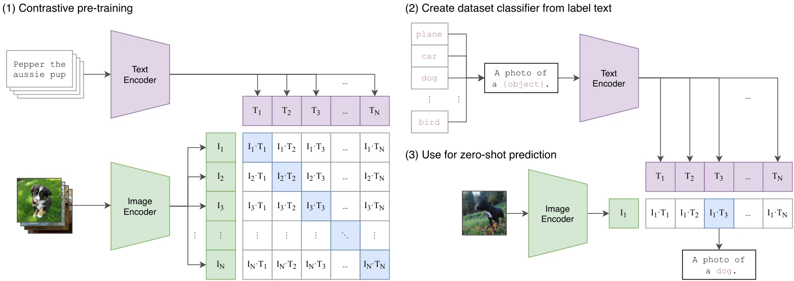
设一批训练数据有 $B$ 对图文 $(I_i,c_i)$。先分别编码并投影到相同维数，再做长度归一化。把投影包含在函数 $f$、$g$ 中，可写成：
两者都是单位向量，因此内积就是余弦相似度。用温度参数 $\tau>0$ 控制 softmax 对差异的敏感程度：
这样得到一个 $B\times B$ 的分数矩阵。对角线是已知配对，非对角线在这个训练目标中作为负配对。它们并不一定在语义上完全无关：两张不同图片也可能都有狗，训练配对与语义真值并非完全等价。
先固定第 $i$ 张图，在这一行的所有文字中进行选择：
正确配对的索引是 $j=i$。希望这个概率更大，便最小化负对数概率：
再反过来，固定第 $i$ 段文字，从一列候选图像中选择：
最终取两个方向的平均：
如果一张狗的图片与“狗”的描述匹配得还不够好，损失会推动对应编码器提高这对图文的相对分数，同时拉开与其他候选的差异。经过许多不同配对的训练，编码器就学会了可比较的图文表示。原论文把缩放系数用对数参数化并学习；这里以温度的等价形式写出。#Radford-et-al-2021-CLIP
但相似度没有规定图像每个像素应该是多少。CLIP 可以判断某张图与一句话是否相符，却没有因此自动获得从文字生成图像的能力。它的训练损失也不是上一章条件扩散的噪声回归损失：前者训练表征，后者训练生成所需的预测器。
全局向量和 Token 特征不是同一个接口
上面的 $v_i$ 是为整段文本构造的全局对比表示，适合与一张图像的全局表示计算相似度。生成器还可能需要保留各个 token 的上下文特征：不仅知道整句话大体说了什么，还要在预测不同图像位置时读取不同内容。
因此，需要区分三个对象：
| 对象 | 表示什么 | 常见用途 |
|---|---|---|
| CLIP 全局文本向量 | 整段文本的对比表示 | 图文相似度、检索、部分生成系统的条件 |
| 文本 token 特征序列 | 不同位置的上下文表示 | 作为 cross-attention 的条件输入 |
| 当前图像特征 | 带噪状态在生成主干中的表示 | 提出查询并计算下一步预测 |
它们的维数、投影和归一化方式由具体模型决定。CLIP 的全局向量计算方式，不能原封不动地当作所有扩散模型的文本接口。常见的 SD 1.x 系统使用 CLIP 文本编码器的序列特征；LDM 原论文的文本实验使用的是另外训练的文本 Transformer，不能把二者写成完全相同的配置。#Rombach-et-al-2022-LDM（§3.3）；#CompVis-SD-v1-4
Cross-attention 怎样读取条件
假设生成主干当前一层的图像特征展平后为：
这里 $N$ 是这一层的图像位置数，不一定是原图像素数。每个图像位置都要决定：当前预测更需要读取哪部分文本信息？cross-attention 通过三个可学习的投影构造查询（query）、键（key）和值（value）：
令 $Q\in\mathbb R^{N\times d_k}$、$K\in\mathbb R^{M\times d_k}$、$V\in\mathbb R^{M\times d_v}$。查询来自图像，键和值来自条件，这就是这里“cross”的含义。#Rombach-et-al-2022-LDM（§3.3）
先计算每个图像位置与每个文本位置的匹配分数：
再对每一行的文本位置做 softmax：
最后把文字信息按权重加权到每个图像位置：
所以，一个位置得到的条件信息不是某个词的硬标签，而是一组上下文特征的加权组合。例如生成围巾附近的结构时，可以更重视与“红围巾”相关的表示。但 attention 不是人工指定的分割图，也不保证某个词与某片区域严格一一对应；这种联系需要从训练中学到。
实际网络还会使用多头计算、输出投影与残差连接。以一个简化残差形式表示：
这说明条件怎样改变图像特征；随后网络继续计算，输出条件噪声、干净图像或速度预测。Attention 输出的是中间特征，并不是一次完整的去噪采样。 采样器仍要拿最终预测更新当前带噪状态。
flowchart TD H["当前图像特征 H"] --> Q["查询 Q"] C["文本 token 特征 C"] --> K["键 K"] C --> V["值 V"] Q --> A["匹配分数与逐行 softmax"] K --> A A --> O["对 V 加权得到条件信息"] V --> O O --> R["输出投影与残差融合"] H --> R R --> D["后续网络层与最终预测"]
这也解释了为什么不能把“使用 CLIP”直接当成一种完整生成算法。CLIP 可以提供条件编码器，cross-attention 提供读取接口，扩散损失则让预测器学会如何利用它们。这些是相互连接的不同组件。
CLIP 编码与 CLIP Guidance
另一个容易混淆的地方，是两种方法都可能用到 CLIP，但发生在不同位置。
使用 CLIP 文本编码器，是先计算 $C$，再把特征作为网络输入。条件扩散模型需要训练好这一接口；常见配置会冻结文本编码器，但冻结与否取决于具体训练方案。
CLIP guidance 则在采样时构造图文相似度目标，通过梯度调整当前状态。设 $R(x_t,t,c)$ 是“越大越匹配”的评分；它可能先将当前状态转换成图像估计，再用 CLIP 评分。用 score 形式概括其引导：
梯度沿评分计算链传回当前状态，$\lambda_t$ 控制强度。实际方法如何处理噪声、图像估计、裁剪和步长，需要另行指定；把普通 CLIP 直接用于重噪声图像，并没有天然可靠的语义保证。这个式子说明的是接口位置，不是所有 CLIP guidance 实现共用的一条完整采样算法。
| 方法 | 条件怎样起作用 | 是否需要采样时的 CLIP 评分梯度 |
|---|---|---|
| CLIP 文本编码 + 条件网络 | 文本特征进入预测器 | 不需要 |
| CLIP guidance | 相似度梯度调整状态更新方向 | 需要 |
| CFG | 组合条件与空条件预测 | 不需要 |
CFG 名称中的 classifier-free 不等于“不需要文本编码器”。它表示不依赖额外分类器来提供指导梯度；本身可以配合使用 CLIP 文本编码器的条件模型。下一章会详细推导它怎样组合两种预测。
DALL·E 2：表征与生成分开
DALL·E 2 的 unCLIP 架构提供了另一个有用对照：它没有简单把全局文本向量当成一张可以直接解码的图像，而是增加了 prior，把文字条件变成可能的 CLIP 图像表示，再由 diffusion decoder 生成图像。#Ramesh-et-al-2022-unCLIP（§2）
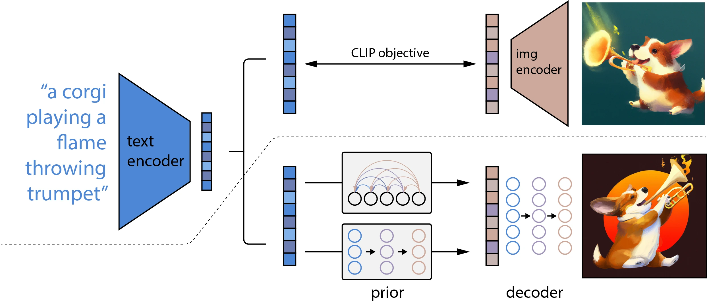
为了避免与 VAE latent 混淆，用 $e_I$ 表示 CLIP 的全局图像向量。生成分布可以分解为：
$p_\phi$ 是 prior，负责为同一文字产生可能的图像表示；$p_\theta$ 是条件图像生成器，负责把表征中没有规定的细节也生成出来。完整系统中的 decoder 及超分辨率阶段见原论文；这里仅保留理解接口所需的分解。
这里的 diffusion decoder 不是 VAE 那种单次前向的图像解码器。 名字都叫 decoder，但前者需要生成过程。CLIP 向量也不是可精确还原每个像素的压缩码：多张语义相近而细节不同的图像，可以对应相近的全局表示。
Prior 要补上哪一步
设文字是“一个戴帽子的男人”。CLIP 文本编码器会给出一个确定的文本表示 $e_T=E_T(c)$，但这句话没有规定帽子的颜色、人的姿态或画面风格。符合它的图像有许多张，相应的 CLIP 图像表示 $e_I=E_I(x)$ 也可以不同。
CLIP 训练鼓励配对图文的相似度更高，并没有要求 $E_T(c)=E_I(x)$，更没有学会给定一句话时，各种可能的图像向量应该以什么概率出现。所以，共享一个可比较的空间，不等于文本向量就是可以直接替换图像向量的输入。
Prior 学习的是条件分布 $p_\phi(e_I\mid c)$：给定这句话，生成可能与它对应的 CLIP 图像向量。 它是一个可采样的生成模型，不只是一次确定性的维数转换，也不是检索库里某张图片的向量。这里叫 prior，是因为它先为下游图像 decoder 提供一个表征上的生成分布；这个 prior 本身仍然以文本为条件。#Ramesh-et-al-2022-unCLIP（§2.2）
可以把整个过程理解为两层不确定性：
- Prior 先采样一种可能的语义与风格表征；同一句话可以产生不同的 $e_I$。
- Decoder 再根据该表征生成图像，补足这个全局向量没有确定的具体细节；同一个 $e_I$ 仍可能对应不同图像。
这不是严格的“prior 决定构图、decoder 只填纹理”分工。CLIP 表征捕获哪些内容、遗漏哪些细节取决于编码器，decoder 也参与形成最终结构。
Diffusion Prior 怎么训练
训练样本仍来自真实图文对 $(x,c)$。冻结 CLIP 编码器，取得真实图像的向量 $e_I=E_I(x)$，并取得文本表示 $e_T$。训练标签来自配对图像的编码，不是来自文本向量。
然后，对这个图像向量加高斯噪声。沿用本文的记号：
$$e_I^{(t)}=a(t)e_I+b(t)\epsilon, \qquad\epsilon\sim\mathcal N(0,I).$$被加噪的是 CLIP 向量，不是图片像素。论文实现还对向量作尺度调整以适配噪声日程；这里把它包含在表征与日程的约定中。
Prior 网络接收带噪向量、时间与文本，直接预测干净的图像向量：
$$\hat e_I=f_\phi(e_I^{(t)},t,c), \qquad \boxed{\mathcal L_{\mathrm{prior}} =\mathbb E_{(x,c),t,\epsilon} \left[\|f_\phi(e_I^{(t)},t,c)-E_I(x)\|_2^2\right].}$$原论文发现，直接预测干净图像表征，比在这个 prior 中使用噪声预测更合适。这是 CLIP 表征上的干净目标预测，不是网络直接输出干净像素图像。#Ramesh-et-al-2022-unCLIP（§2.2）
其网络是带因果 attention mask 的 decoder-only Transformer，序列依次包括：编码后的文字、CLIP 全局文本向量、扩散时间嵌入、带噪 CLIP 图像向量，以及用于读出预测的最后一个嵌入。这里的“decoder-only”指 Transformer 的网络类型，与下游负责生成图像的 diffusion decoder 是两个不同概念。
生成时怎么用
给定新提示词，整个过程是：
- 编码文本，得到 prior 所需的文本条件。
- 在 CLIP 图像表征空间初始化高斯噪声，经 prior 的反向扩散逐步生成 $e_I$。每一步重新预测干净表征，并由采样器更新当前带噪表征。
- 把生成的 $e_I$ 交给图像 diffusion decoder，另从图像生成所用的初始噪声出发生成图像。原架构还保留文本条件通路，随后使用超分辨率模型提高分辨率。
因此，这里有两套生成过程：先生成图像表征，再以它为条件生成图像。Prior 不是图像去噪循环里的一个普通文本投影层。其表征空间噪声与下游图像生成的初始噪声也不是同一个状态。
原论文的 diffusion prior 还会生成两个候选图像向量，再选择与 CLIP 文本向量点积更高的一个交给 decoder。这是表征候选的排序，不等于先生成两张完整图片再挑选。#Ramesh-et-al-2022-unCLIP（§2.2）
为什么不直接用文本向量
直接用文本向量不是不可能，prior 也不是所有文生图模型必需的模块。论文专门比较了这些路线：
小模型对照方案 测试集 FID，越低越好 专门训练以 CLIP 文本向量为条件的 decoder 9.16 完整 diffusion prior + decoder 7.99 将文本向量直接送入以图像向量为条件训练的 decoder 16.55 这些是论文 §4.1 的小模型消融结果，各方案搜索了指导强度；不是完整版模型的最终基准分数，也不能据此给不同论文的系统排名。它说明两点：图文相似并不意味着直接替换条件没有代价；在该实验中，显式学习图像表征分布比直接文本条件路线更好。#Ramesh-et-al-2022-unCLIP
同一篇论文还比较了自回归 prior：先把图像向量降维、量化成离散序列，再逐项预测；diffusion prior 则直接建模连续向量。在论文比较中，diffusion prior 以更少训练计算取得更好结果。因此，prior 是一种功能分工，diffusion 和自回归是实现这一功能的两种方法。
回到本章主题：CLIP 解决图文表征对齐，prior 学习从文本到可能图像表征的分布，decoder 学习从该表征到图像的生成。把这三件事拆开，才能看懂 unCLIP 为什么需要额外训练，而不是仅把两个现成编码器接起来。
小结：条件特征怎样变成生成方向
这一章把接口拆成了三步：
- 用图文配对训练 CLIP，使文本和图像拥有可比较的表征。
- 选择全局向量或 token 特征，并由生成模型的条件接口读取。
- 用生成训练目标，让这些条件信息真正影响噪声、图像或速度预测。
因此，语义对齐不会自动生成像素，attention 也不会自动完成一次采样。我们需要将表征、条件网络与采样过程连接起来。下一章转向 CFG：当预测器已经会读取条件时，为什么还要同时计算空条件预测，又怎样利用两者的差让条件更突出？
已经有条件，为什么还要 Guidance
上一章解释了文本怎样进入生成网络。但“模型接收了文字”和“模型充分遵循文字”是两回事。条件预测器会在图像真实感、数据中的常见模式和指定要求之间形成自己的估计，我们希望在采样时还能调节它对条件的响应。
Classifier-Free Guidance（CFG，无分类器引导）提供的就是这种调节：在同一个带噪位置、同一个时间，比较有条件与无条件的预测，再突出条件带来的差异。 它不改变文本编码器的含义，也不需要先为每条提示词重新训练模型。#Ho-Salimans-2022-CFG（§3）
先用理想 score 推导其直觉，再说明实际网络怎样实现。全文仍沿用“较大的 $t$ 表示较高噪声”的约定。
两个 Score 的差是什么
固定条件 $c$，定义无条件与有条件的 score：
前者描述当前状态在总体分布中的局部变化，后者描述在指定条件下的局部变化。它们都是随位置和时间改变的向量场，不是朝向某个固定中心的箭头。
在相关密度可微且为正的位置，贝叶斯公式给出：
取对数：
对 $x$ 求梯度。条件先验 $p(c)$ 不依赖当前图像状态，因此最后一项消失：
这个差向量说明：从当前位置出发，怎样微小改变状态，才能提高它与指定条件的兼容性？ 对类别条件，“兼容性”可以理解为类别后验；对复杂文本，则是理论条件模型中的相应量，不代表实际系统额外训练了一个能给任意句子评分的分类器。
早期 classifier guidance 会另外训练能处理带噪图像的分类器，直接计算这个梯度。CFG 则借助条件、无条件两种生成预测之差构造指导信号，所以叫 classifier-free。#Ho-Salimans-2022-CFG（§2–3）
外推怎样加强条件
采用本文的强度参数 $w$，CFG 写成：
后一种写法尤其重要：普通条件模型已经给出了 $s_c$，当 $w>1$ 时，我们再沿“无条件预测变成条件预测”所产生的差异继续外推。
| 本文的 $w$ | 得到的预测 | 含义 |
|---|---|---|
| $0$ | $s_u$ | 无条件预测 |
| $1$ | $s_c$ | 普通条件预测，没有额外外推 |
| $>1$ | $s_c+(w-1)(s_c-s_u)$ | 进一步突出条件差异 |
也可以写成 $w s_c-(w-1)s_u$。这里确实减去了无条件预测的一部分，但它和放大条件预测是成对进行的，不能理解为“去掉图像的一切公共信息”。
例如，当前位置两个局部向量分别为：
条件带来的变化是 $(1,0)$。当 $w=3$ 时：
横向的条件差异被加强了，共有的纵向分量仍是 1。如果只是把条件向量整体放大三倍，得到的将是 $(6,3)$，与 CFG 不同。
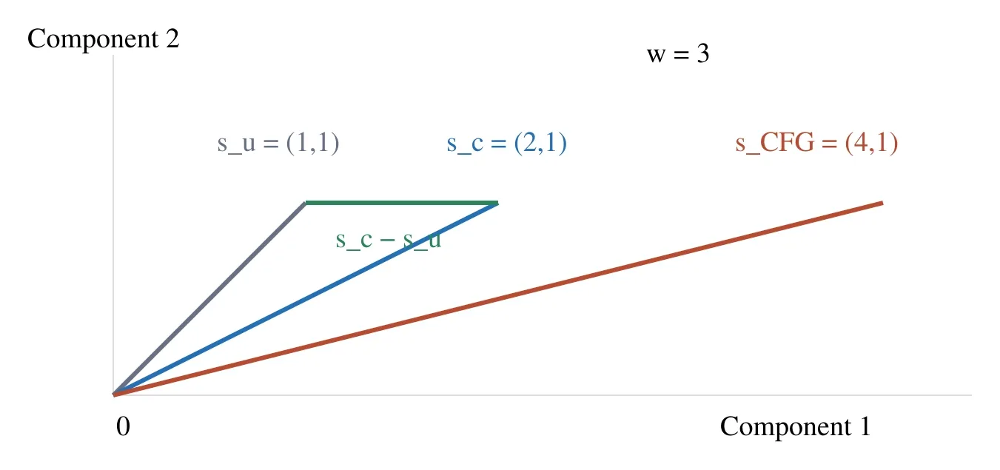
因此，“削弱通用倾向、突出指定条件”可以作为直觉，但其精确含义是上述差向量的外推，不是把样本从一个“通用图像中心”推向另一个“条件中心”。
原文参数约定不同。 Ho 与 Salimans 写成：
这里用 $\gamma$ 代记原论文的 $w$，以免混淆。它与本文参数的关系是 $w=1+\gamma$：原文的指导强度 0，对应本文的 1。比较论文图片、实现默认值与公式时，必须先看采用哪种约定。#Ho-Salimans-2022-CFG（Eq. (6)）
一个模型怎样学会两种预测
CFG 不要求训练两套独立网络。原论文使用同一网络，在训练时以一定概率丢弃条件，让网络同时学习有条件和空条件预测。#Ho-Salimans-2022-CFG（Algorithm 1）
令 $m$ 表示是否保留条件，以概率 $p_{\mathrm{drop}}$ 令 $m=0$，并定义：
这里 $\varnothing$ 是训练约定的空条件表示。它可能通过空标识或空提示词编码实现，不必是一个全零张量。
图像仍按原来的路径加噪：
训练目标为：
丢弃条件时，网络仍要预测同一加噪规则下的噪声，只能利用带噪状态与时间；保留条件时，则可以利用更多信息。随机丢弃在这两类任务间分配训练样本，指导强度 $w$ 通常留到推理时选择，不出现在这条基础训练损失中。
如果网络没有学过空条件分支，推理时随便把条件置空，并不能保证得到可靠的无条件预测。另一方面，实际应用若用负面提示词替代空提示词，减去的是另一个条件预测，已不完全等于这里推导的无条件基线。
从 Score 换成噪声预测
实际网络经常输出噪声，而不直接输出 score。对于前述高斯扰动，在 $b(t)>0$ 时有：
把它们代入 CFG：
因此可以直接组合噪声预测：
注意噪声与 score 之间的负号：噪声预测向量不能直接画成图像沿反向过程移动的箭头。CFG 只构造供采样器使用的预测；它本身不是完整的状态更新。
以 DDIM 为例，先使用组合后的预测得到：
再将它与 $\hat\epsilon_{\mathrm{cfg}}$ 代入 DDIM 的跨步式。DDPM 可以把组合预测用于反向均值，ODE 求解器也可以使用由它换算的向量场。指导方式和采样器是两个选择：CFG 不决定必须用 ODE 或 SDE，也不会自动减少采样步数。
同一位置和时间下，若各种预测量之间采用前文的仿射换算，且没有额外裁剪或非线性处理，这种系数和为 1 的组合也能在相应参数化间转换。带阈值、归一化或其他修正的实现，则需按实际运算顺序核对。
推理每一步通常需要条件与空条件两份预测，可以拼成一个 batch 执行，但计算量并不因此等于单份预测。CFG 省去的是另训分类器及其采样梯度，不是免费获得更强条件。
原论文展示了什么
图中的变化不只是“沿原高斯分布缩小方差”：质量会向远离其他类别、条件更容易辨认的区域移动，形状也会变化。它帮助理解为什么加强条件有时会减少覆盖范围，但不能替代实际 CFG 实验。
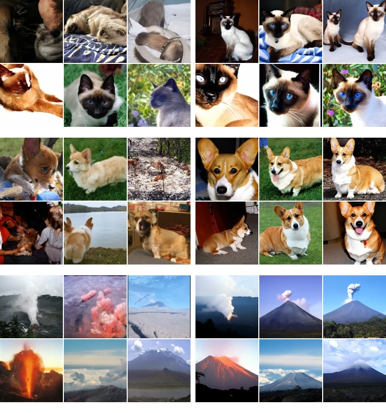
原论文说明 CFG 能在生成质量与多样性之间进行调节，但这不意味着强度越大越好，也不意味着这个类别条件实验直接证明了所有文本组合指令的遵循能力。#Ho-Salimans-2022-CFG（§4）
从理想 score 的公式还可以得到固定时间的解释：
当该表达式可归一化时，它对应一个更强调条件兼容性的时间切片密度。但不同时间的这些密度，不自动构成同一个前向扩散过程的一致边际族；不能据此断言实际引导采样精确得到某个简单的终点幂分布。实际网络预测还存在误差，其输出也未必是某个精确密度的梯度。#Ho-Salimans-2022-CFG（§3）
小结与局限
CFG 的关键不是增加一种文本表示，而是利用同一状态下的两种预测，构造“条件使预测改变了多少”，再沿这个差异外推。
它的局限也由此显现：
- 强度过大可能使颜色过饱和、覆盖范围变窄，也可能放大预测误差；最佳强度取决于模型、条件和采样配置。
- 它不能弥补条件接口完全缺失的信息。文字描述“放在左边”不等于明确的边界框或像素级约束。
- 它通常增加预测计算量，也没有解决空间布局、主体身份与多条件冲突的全部问题。
下一章讨论 GLIGEN：如果需要明确指定对象及其位置，能否把这些信息通过专门的接口交给已有生成器，而不是只靠提高文本指导强度？
文字为什么还不够
假设我们想生成“一只猫在左边，一只狗在右边”。普通文本条件可以表达这个要求，CFG 也能加强对提示词的响应，但它们没有直接提供一个接口，让用户画出两个框并指定每个框里是什么。提高 CFG 强度，也不等于提高某个对象的坐标精度。
这里需要补上的信息是：哪个对象，应该出现在什么位置？ GLIGEN（Grounded-Language-to-Image Generation）把这种语义与空间位置的关联称为 grounding。它在保留原文本条件的同时，让已有生成模型接收额外的对象描述与位置条件。#Li-et-al-2023-GLIGEN（§1、§3）
本章以论文主要研究的“短语 + 边界框”为例：用户既提供整幅图的描述，也提供若干对象及各自的框。目标是在尽量保留预训练模型生成知识的同时，让模型学会使用新接口。它不是重新定义加噪路径，而是改造条件输入与中间特征计算。
把对象和位置变成 Token
用 $c$ 表示整幅图的描述，$e_i$ 表示第 $i$ 个对象的短语，$b_i$ 表示它的边界框。完整条件写为：
例如对象短语可以是“戴红帽子的男人”，框给出他在画面中的范围。坐标必须采用与训练和实现一致的约定，不能把原图像素坐标和归一化坐标直接混用。
模型需要同时知道对象是什么、在哪里。GLIGEN 先分别编码这两类信息，再拼接并送入多层感知机（MLP）：
方括号中的分号表示沿特征维拼接。$g_i$ 是一个 grounding token，包含一个对象的语义与位置，而不只是一个框编号。#Li-et-al-2023-GLIGEN（§3.1）
Fourier 编码用多个频率的正弦、余弦表示坐标。以单个坐标 $u$ 为例，可示意为：
对四个坐标分别编码后组合。这个式子解释编码形式，频率和维数需按实现确定。直觉上，它为网络提供不同尺度的位置变化特征；不是通过写入一个坐标，便自动保证生成对象严格落在框内。
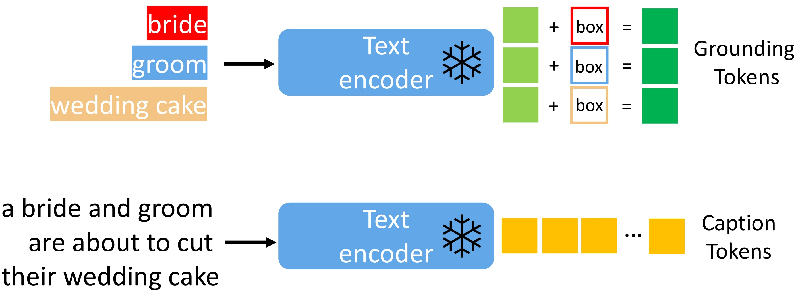
为什么对象短语也使用预训练文本编码器，而不是为每个类别新学一个编号向量？因为后者通常只能查找训练时定义的类别。文本表征则能把新短语连接到预训练模型已有的概念空间，为未见类别的迁移提供接口。开放词汇不是无条件保证：能输入一个新词，不等于模型一定能正确生成或定位它。
新信息插在哪里
原有扩散 U-Net 的 Transformer block 已经包含图像 self-attention 和读取文本的 cross-attention。GLIGEN 保留这些层，在二者之间插入新的 gated self-attention。#Li-et-al-2023-GLIGEN（§3.2）
用 $H\in\mathbb R^{N\times d}$ 表示当前层的图像特征 token，$G\in\mathbb R^{K\times d}$ 表示投影到这一层维数的 grounding token。原有图像 self-attention 后，新增模块计算：
这里的 $[H;G]$ 沿 token 序列 拼接，与前面构造单个 token 时沿特征维拼接不同。$\operatorname{Select}_{\mathrm{image}}$ 只取 attention 输出中对应原图像位置的部分，因而输出仍有 $N$ 个图像 token，可接回原主干。随后继续执行原有文本 cross-attention。
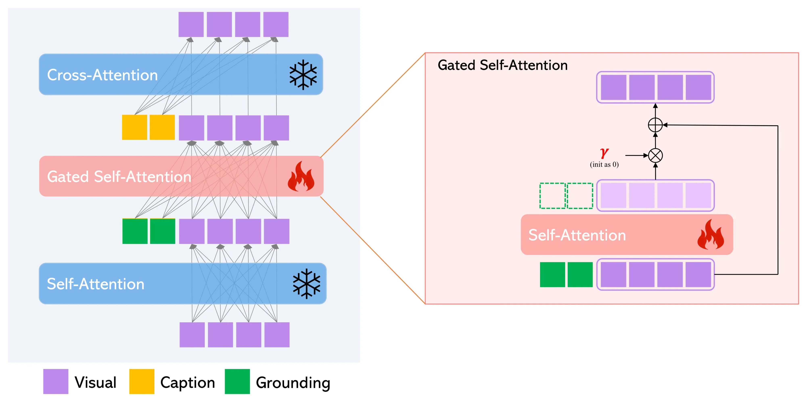
新增 attention 对拼接序列共同构造 Q、K、V。图像位置既能读取对象与位置 token，也能与其他图像位置交换信息。它与上一章的普通文本 cross-attention 不同：后者的 Q 来自图像，K/V 只来自文本条件。
以两个框为例，不需要先把左半边所有像素硬编码为“猫”。网络通过训练学会：某些图像位置应该更关注猫及其框，另一些位置应该关注狗及其框。布局条件通过中间特征影响最终预测，仍然是一种学习到的软控制。
为什么把门从零开始
$\gamma$ 是可学习的标量，初始化为 0；$\beta$ 在训练时取 1，推理时用于调节新增分支。由于 $\tanh(0)=0$，初始化时：
因此，插入模块后不会立刻让随机初始化的新分支扰乱原网络输出。训练随后逐步打开门，让新增条件产生作用。这就是“先保持原有行为，再学习如何控制”的直觉。
门为零，为什么还能开始训练？把新增分支简写成 $R_\phi$，则：
在 $\gamma=0$ 时，这个导数为 $\beta R_\phi$，一般并不为零，门参数可以先获得更新。相反，分支内部参数的直接梯度包含门系数：
所以单独沿这条分支，在初始化时内部参数的梯度会被零门挡住；门打开后才能继续学习。不能把稳定初始化解释成“所有新参数从第一步就同时得到非零梯度”。
训练目标变了吗
主流边界框设置冻结原有模型参数 $\theta$，训练新增参数 $\phi$，包括 grounding 编码 MLP、注意力层和门。训练时需要带文本、对象与位置标注的图像，仍使用去噪回归目标：
$z_t$ 是当前带噪图像 latent，$y$ 包含文本和 grounding 条件。框标注不是待预测的噪声标签；它提供了额外信息，让模型在预测噪声时更容易判断对象的来源与位置。#Li-et-al-2023-GLIGEN（§3.2）
因此，本方法增加的是条件接口和训练参数。噪声仍是人为采样的已知噪声，基本生成训练目标没有因此换成检测损失，也没有把“框内必须出现对象”变成采样时的硬约束。
采样时什么时候使用位置条件
GLIGEN 的标准方式是在整个采样过程中使用新增条件分支，即 $\beta=1$。论文还提出分阶段启用它：生成早期用框等条件建立布局，后期关闭新增层，更多依赖原模型细化画面。#Li-et-al-2023-GLIGEN（§3.2）
为避免与噪声时间 $t$ 的方向混淆，这里用 $k=1,\ldots,S$ 表示 从高噪声到低噪声的执行步序。用 $\rho\in[0,1]$ 表示前多少比例的步骤启用条件：
原文将该比例记为 $\tau$。它与可学习门 $\gamma$ 的职责不同：$\gamma$ 决定训练得到的分支影响，$\beta_k$ 决定这一步是否启用分支。
关闭以后，当前 latent 已经受到早期布局条件的影响，并不会恢复成从未接收过布局的轨迹；只是后续网络调用不再读取新增分支。具体关闭时机需要权衡条件遵循与画面质量，不是越早关闭越好。这也不是 DDIM 的跨步采样：可以保持同一个时间表，只改变各步是否使用条件模块。
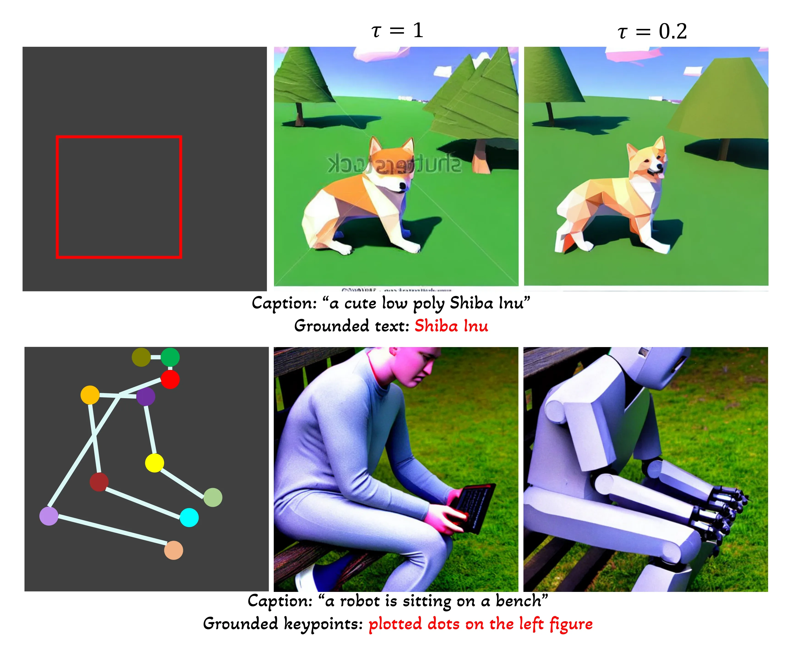
能力与边界
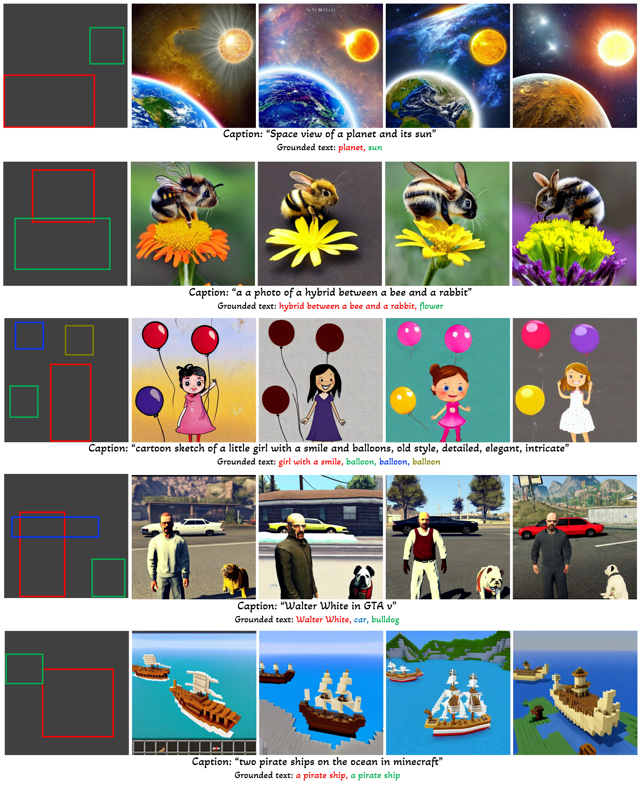
原论文还探索了参考图语义、关键点，以及边缘、深度等空间对齐条件。但这些输入需要相应的编码和训练，不是把任意控制图丢给一个框模型就能工作。对于部分稠密空间条件，论文还尝试将条件特征接入 U-Net 输入并训练其首层卷积；“所有原权重都冻结”的描述不能不加区分地覆盖每个扩展设置。#Li-et-al-2023-GLIGEN（§3.1）
本章的结论是：GLIGEN 把“对象是什么、在哪里”编码为额外 token，用零初始化门控模块逐步接入已有生成主干。 它与 CFG 可以配合：前者补充条件信息的接口，后者调节条件预测的使用强度。
它仍有局限：位置控制是软的，多个对象可能混淆；未见概念的泛化依赖预训练知识及训练数据；关键点等结构条件跨类别迁移也可能失败。下一章转向 ControlNet，讨论姿态、边缘、深度等具有空间结构的条件，怎样通过可训练分支和多尺度残差进入生成网络。
从对象框到空间条件图
GLIGEN 主要示例中的框指定对象的大致范围，却没有规定手臂怎样弯曲、轮廓怎样走、前景与背景相距多远。姿态骨架、边缘图、深度图和分割图可以提供这些信息，它们通常与目标画面的空间位置对应。
例如给定一张人物骨架，我们希望生成的人遵循这个姿势，但衣服、外貌、背景仍能由文本或模型决定。条件图不需要包含完整照片；它保留某种结构，同时留出可生成的自由度。
ControlNet 的问题是：怎样让已经训练好的文生图模型使用这些新条件，同时尽量保留原有的生成能力？ 它的回答是冻结原模型，复制其中一部分形成可训练控制分支，再通过零初始化连接，把控制残差注入原网络。#Zhang-et-al-2023-ControlNet（§3）
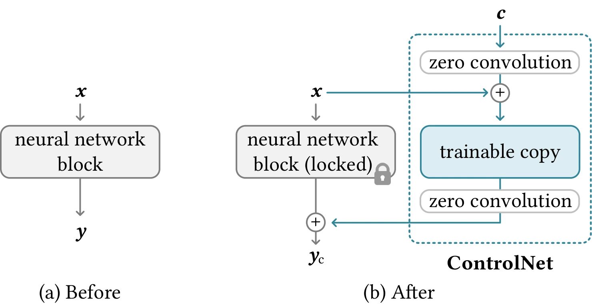
控制分支怎样接入
先看一个模块，之后再放回完整 U-Net。设原模块输入特征为 $h$，输出为：
ControlNet 保留并冻结 $\theta$，复制出可训练参数 $\phi$，初始化时令副本参数等于原模块参数。再引入两个零卷积 $Z_1$、$Z_2$：
这里 $c_f$ 是条件图编码后的特征；时间和文本等原有条件暂时省略。$Z_1$ 把新条件接入副本，$Z_2$ 将副本输出变成加给原网络的残差。式子描述的是基本模块，不意味着实际系统把整套 U-Net 都复制一遍。#Zhang-et-al-2023-ControlNet（§3.1）
在论文的 Stable Diffusion 实例中，可训练副本包含 U-Net 的编码路径与中间块；对应输出通过零卷积，加到原网络的 skip connection 与中间特征上。论文示例是 12 个编码块输出及 1 个中间块输出，不应把这个数字泛化为所有版本的 ControlNet。
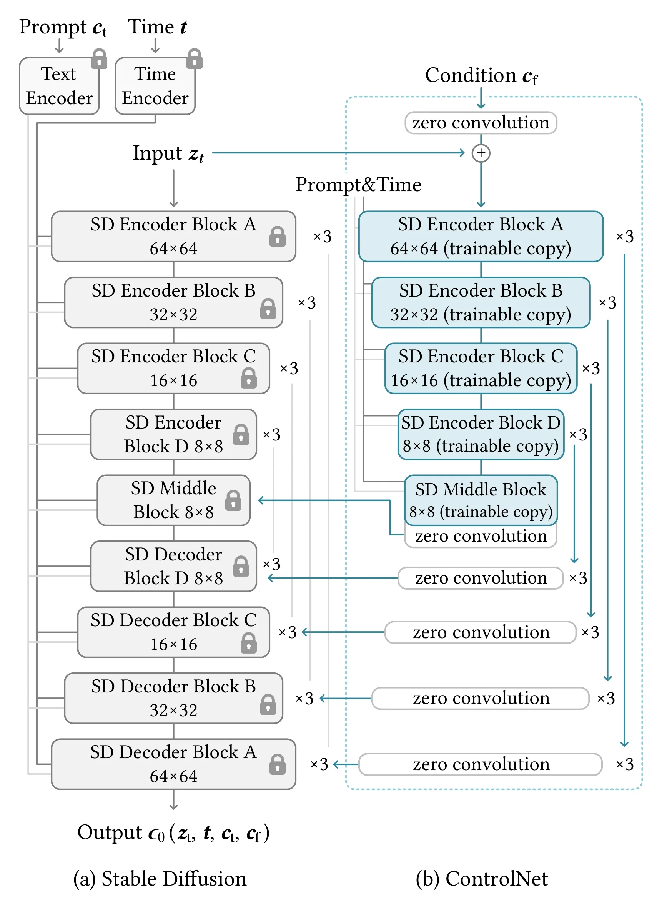
为什么要接入多个尺度？低分辨率特征能够影响较大范围的布局，高分辨率特征能够影响更局部的结构，后续上采样路径将这些信息逐步结合。这里是功能上的直觉，各尺度并没有绝对互斥的职责。
控制分支也不只看一张静态骨架。它读取当前带噪状态，并在原架构中使用时间、文本等信息，所以其输出通常依赖当前去噪时刻。残差不能简单理解为“提前算好的干净姿态图片”。
条件图不是另一张待生成图
记输入控制图为 $c_{\mathrm{img}}$，通过条件编码网络得到：
它将条件图转换成能与生成主干对接的特征尺寸。例如论文的 512×512 图像设置对应 64×64 的图像 latent，条件编码也需要对齐到相应的空间尺度。这里的条件编码网络与 VAE 图像编码器职责不同，不应因为都在降采样就视为同一个模块。#Zhang-et-al-2023-ControlNet（§3.2）
训练时，对真实目标图像的 latent $z_0$ 加噪，而不是把控制图当成目标图来加噪：
然后预测器同时读取带噪状态、时间、文本 $c_{\mathrm{text}}$ 与控制图特征：
期待的行为仍由去噪监督学出来：当控制图与真实图像对应，利用姿态、深度等信息可以减少预测的不确定性。没有必要把基本目标改成“逐像素复制控制图”。
训练数据因此需要图像、文本与相应控制条件。边缘、深度等条件可以通过预处理器从图像提取，但标签质量及其分布会影响控制能力。不同条件需要相应模型或明确支持这些条件的联合训练，不能假设一个姿态 ControlNet 天然支持深度图。
零卷积为什么不阻止学习
零卷积是 权重和偏置初始化为零的 1×1 卷积。它不是永远输出零的固定操作，也不是把输入图像清空。
对某个空间位置，用矩阵形式表示这个卷积：
于是初始输出 $r=0$，新增残差不会立即改变冻结主干的输出。与 GLIGEN 的零门类似，关键是控制新增分支在初始化时的影响，而不是认为零本身有生成能力。
设上游反向梯度为 $\delta=\partial\mathcal L/\partial r$，则单个位置有：
完整卷积的权重梯度再对空间位置及 batch 求和。当 $W=0$ 时，前两项仍可能非零，所以零卷积自身可以先更新；最后一项为零，说明其上游分支此刻可能暂时收不到梯度。连接权重长出以后，梯度才能继续传向更深处。
因此，不能说“零初始化让所有控制参数从第一步同时学习”，也不能说“零权重意味着整个系统永远学不动”。控制分支来自预训练副本，其特征不是一个全零网络的输出；零连接可以利用已有特征开始学习。
冻结原参数还需要一个区分：它意味着不更新这些权重，不意味着所有冻结层都可以完全省略反向传播。注入残差之后，训练仍需要通过后续计算把损失梯度传回控制分支。
推理怎样控制
每个采样时刻，先用控制分支结合当前状态产生多尺度残差，再让主干利用它们计算最终预测。以第 $\ell$ 层为例，可概括为：
$\lambda_\ell$ 表示控制残差的缩放；具体实现可能共享一个强度，也可能按层或按时间调整。$\lambda_\ell=0$ 就关闭该位置的控制贡献；调大它通常增强结构影响，但不保证精确度单调提升，也可能牺牲画面质量。
随后由 DDPM、DDIM 或其他兼容采样器使用最终预测更新状态。ControlNet 没有强制更换加噪路径或指定 ODE/SDE，也没有把条件图变成每一步都要复制回去的像素约束。
它和 CFG 的“强度”不同：ControlNet 强度缩放内部控制残差；CFG scale 则组合最终的条件和基线预测。两者可以一起使用，但不能当作同一个旋钮。在 CFG 两次预测中是否都保留控制图，还会改变差向量究竟强调哪些条件，需要查看具体实现。
多个 ControlNet 也可以在对应层累加控制输出：
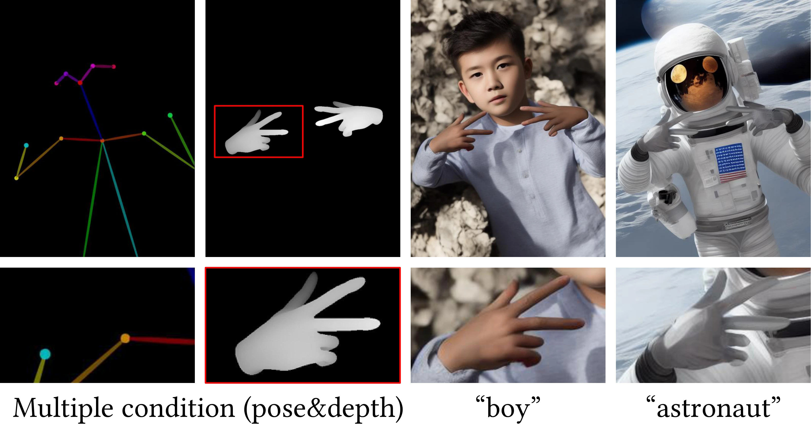
原论文展示直接相加即可组合；上式额外写出系数以解释可调强度，取全 1 就是直接相加。残差可加不意味着条件永远兼容：骨架要求人物在左边，另一张边缘图却要求人在右边，模型仍可能折中或失败。
T2I-Adapter 有什么不同
T2I-Adapter 同样冻结已有文生图模型，也把控制条件转换成多尺度特征。区别在于，它不复制 U-Net 编码路径，而是训练较轻的条件特征提取网络。#Mou-et-al-2024-T2I-Adapter（§3.2）
在原论文的空间控制设置中：
四个尺度的条件特征对齐到 U-Net 编码器的相应尺度。适配器由卷积、残差块和下采样组成，训练仍让去噪损失经冻结主干反传到适配器，从而学习“什么样的条件特征能让已有生成器利用外部结构”。
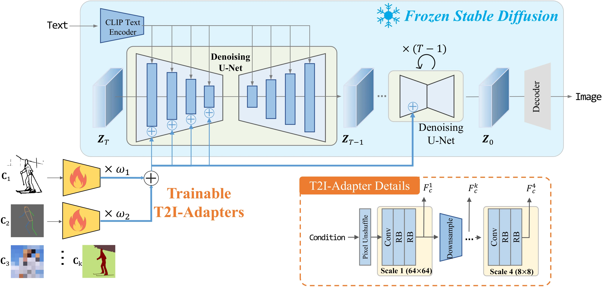
一个重要的计算差异是：这里的 $A_\phi$ 只读取控制图，不读取当前 $z_t$ 或时间 $t$。固定控制图时，可以在采样前计算一次，再在各步复用；变化的是主干如何将这些特征与当前状态结合。原始 ControlNet 的深层控制分支则随带噪状态和时间重新计算。这里比较的是两篇原论文的典型架构，不涵盖所有后续变体。
| 维度 | 原始 ControlNet | 原始空间 T2I-Adapter |
|---|---|---|
| 可训练部分 | 预训练编码路径与中间块的副本、条件编码及零连接 | 较轻的多尺度条件编码网络 |
| 分支主要输入 | 当前带噪状态、时间、文本及控制条件 | 控制图 |
| 特征注入 | skip connection 与中间块 | U-Net 编码器各尺度 |
| 采样时计算 | 控制分支随步骤重新计算 | 固定条件特征可预先计算并复用 |
| 初始化重点 | 预训练副本 + 零卷积，初始新增残差为零 | 学习条件特征与主干的对齐，不采用同一套复制与零连接结构 |
| 训练主干 | 冻结 | 冻结 |
较轻的适配器降低了新增参数和条件分支的计算，但不能只凭架构就宣称画质或控制能力一定更好。ControlNet 复用预训练特征并随状态调整控制，T2I-Adapter 以较轻的静态条件特征接入；效果应放在相同基座、数据、条件和评价口径下比较。
小结与局限
本章的共同思路是：不必把空间条件改写成一段更长的文字，可以训练一个与主干特征对接的控制接口。 ControlNet 用预训练副本与零卷积逐步建立这个接口；T2I-Adapter 用较轻的多尺度编码网络学习条件对齐。
它们没有解决所有控制问题：
- 骨架约束姿态，不自动指定身份；边缘和深度也只保留部分信息。
- 控制图噪声、分布变化或条件冲突，可能让结果偏离预期。
- 控制通常是软约束，不能保证每个边缘、关节或像素位置都严格满足。
- 模型权重、注入层位和通道必须兼容；“都叫 Stable Diffusion”不代表跨版本可以直接复用。
下一章讨论 IP-Adapter：当目标是“参考这张照片的视觉内容或风格”，而不是“遵循这张骨架或深度图”时，参考图特征应该从哪里进入模型？
照片提供了什么条件
如果我们希望生成“一只与参考照片相似的狗”，只输入“一只狗”会丢失许多视觉信息；改为手写毛色、外形、画风等长描述，也不一定准确。参考照片可以直接提供这些难以用文字完整表达的特征。
IP-Adapter 中的 IP 指 Image Prompt，即图像提示。它要解决的是：怎样把一张图当作条件交给已有文生图模型，同时保留文本条件和已有生成能力？ 它不要求为每张参考图重新训练，而是先训练一个通用接口，推理时再换参考图。#Ye-et-al-2023-IP-Adapter（§1、§3）
这里有一个重要区分：作为参考的图片，不必成为生成轨迹的起点。通常可以从新的高斯噪声开始生成，参考图通过独立条件分支影响每一步预测。它不同于常见 img2img 中“给输入图加噪，再从该状态去噪”的使用方式；两种机制也可以组合。
图像怎样变成条件 Token
基础 IP-Adapter 冻结 CLIP 图像编码器，先提取参考图 $I_{\mathrm{ref}}$ 的全局表示：
再通过可训练投影，把一个全局向量变成一组图像条件 token：
原论文基础版取 $K=4$，投影网络由线性层和 LayerNorm 构成；输出维数与主干文本条件接口匹配。#Ye-et-al-2023-IP-Adapter（§3.2）
这里的四个 token 是从全局向量投影得到的，不是四个指定图像区域。网络可以学习不同的表示分工，但不能把它们直接解释为四块空间位置；全局编码已经丢掉的信息，也不能仅靠投影凭空恢复。
与 DALL·E 2 的 prior 对照，可以更清楚地理解这一点：prior 从文本生成可能的图像表示，而 IP-Adapter 在这个设置中已经拿到了参考图，只需编码它，再学习如何把表示送入生成器。$P_\phi$ 不是需要迭代去噪的 diffusion prior。
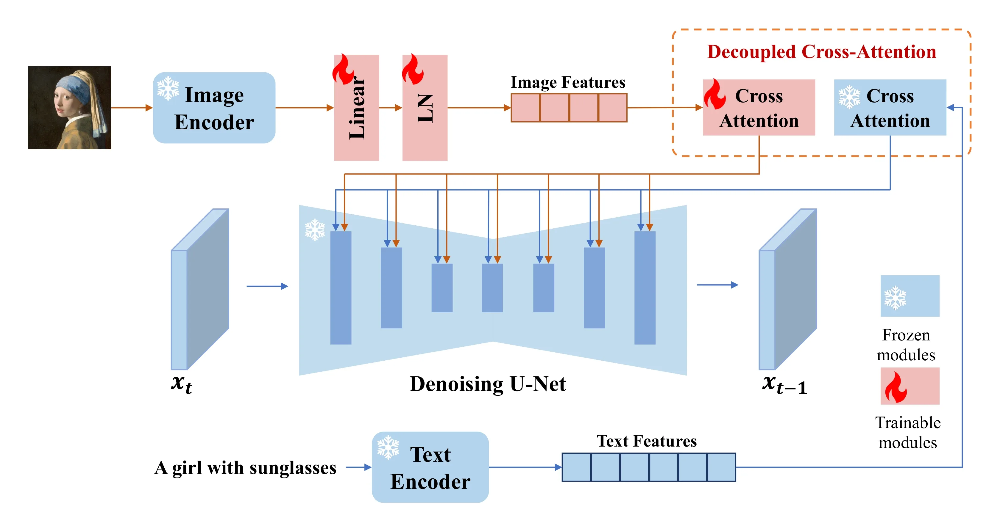
为什么不直接拼接图文 Token
第二章介绍了文本 cross-attention。设当前图像特征为 $H$，文本特征为 $C_T$，则：
一个直接的办法是把 $C_I$ 和 $C_T$ 拼接后一起送入原 attention。然而，原来的 K/V 投影是围绕文本条件训练的；图像投影必须适应该接口，可能限制图像特有信息的利用。论文据此提出为图像单独建立 attention 分支，并用实验比较两种设计。#Ye-et-al-2023-IP-Adapter（§3.2、§4.3）
从数学上看，拼接还会让两种模态的 token 在同一个 softmax 分母中竞争。固定一个查询，设文本和图像的匹配分数分别为 $a_j$、$b_k$，则拼接后的输出是：
令 $Z_T=\sum_j e^{a_j}$、$Z_I=\sum_k e^{b_k}$，并分别定义模态内归一化的输出 $o_T$、$o_I$，便有：
也就是说，图文各分到多少总权重，会随当前分数、token 数与查询变化。这个分解是对共同 softmax 的分析，不证明拼接必然失效；许多联合多模态模型也可以通过专门训练使用共同 attention。这里的具体问题，是怎样适配一个原本按文本条件训练、现在又被冻结的生成器。
解耦 Attention 怎样做
IP-Adapter 保留原文本 attention，另给图像特征学习 K/V 投影：
两条分支共享来自当前图像特征的查询 $Q$，分别计算 attention：
然后合并：
实际模块还包括输出投影和主干残差连接；这里保留解释双分支所需的核心运算。与拼接不同，每条分支各自在自身的 token 上归一化，$\lambda$ 再显式调节图像分支的贡献。它不是把参考图的像素与生成图直接按比例混合。
原有 $W_Q,W_K,W_V$ 保持冻结，每个 cross-attention 模块新增可训练的 $W_K^I,W_V^I$。原论文将它们从文本 K/V 投影初始化，以加快收敛；这与 ControlNet 零卷积、GLIGEN 零门的初始化方案不同。图像投影 $P_\phi$ 也需要训练，不能说 IP-Adapter 只训练两块矩阵。#Ye-et-al-2023-IP-Adapter
$\lambda=0$ 关闭图像分支，在相同输入与采样配置下恢复原文本模型的预测；$\lambda$ 增大则加强参考图分支。但文本和参考图仍通过同一个生成主干共同影响结果，“解耦”不等于二者语义上永远不冲突。
接口怎样学会使用参考图
训练主要使用图文配对数据。把训练图像编码为参考条件，同时将目标图像的 latent 加噪，训练模型在图像和文本条件下预测噪声：
$\theta$ 表示冻结主干，$\phi$ 包含图像投影与新增 attention 参数，CLIP 图像编码器也冻结。图像条件越能帮助解释目标，去噪损失就越能推动接口学会利用它。
训练时还会随机丢弃图像、文本或二者，以支持 CFG。原论文丢弃图像条件时将 CLIP 图像向量置零；经过带偏置和归一化的投影后，它不一定等于把图像 attention 输出直接置零。因此，“空图像条件”和推理时令 $\lambda=0$ 需要分清。
训练完成后，为新参考图计算一次 CLIP 表示和投影特征即可，不用针对该主体重新优化参数。但生成过程中，每一步的查询 $Q$ 随当前状态改变，所以图像 attention 仍需逐步计算，不能把整个参考分支都当作一次性缓存。
它能保留多少细节
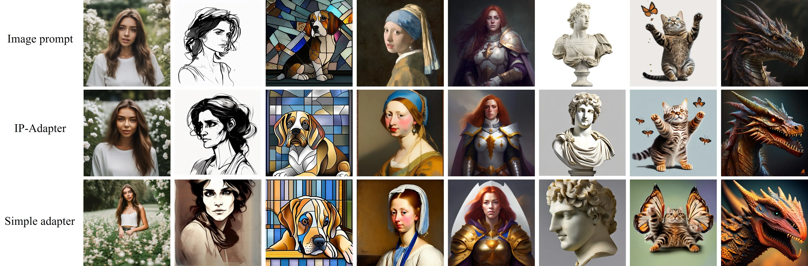
基础版使用 CLIP 全局向量，能够传递内容与风格信息，但不保证保留文字、面部细节或每个局部结构。论文因此还探索了细粒度特征版本：取 CLIP 倒数第二层的网格特征，通过小型查询网络与 16 个可学习 token 提取条件，再接入图像 attention。#Ye-et-al-2023-IP-Adapter（§4.3）
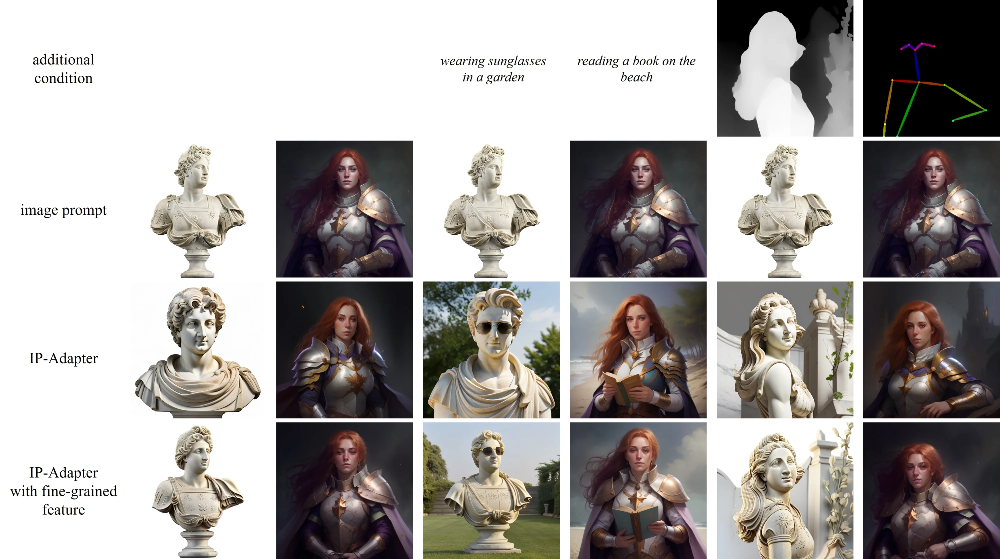
这说明参考信息的瓶颈不只在“控制强度”，也在编码器究竟保留了什么。若某个细节未进入条件表示，提高 $\lambda$ 并不能保证恢复它。后续专用人脸或身份适配方法还会增加身份编码等设计，不能把它们的能力全部归给原始 IP-Adapter。
与其他方法怎样分工
| 方法 | 输入主要表达什么 | 新参考图或新主体是否需单独训练 |
|---|---|---|
| ControlNet 的姿态/深度等设置 | 与画面对应的空间结构 | 通常不需要，但需匹配已训练条件类型 |
| 基础 IP-Adapter | 参考图的视觉内容与风格 | 不需要，为新图编码即可 |
| 常见 img2img | 通过加噪起点保留输入图信息 | 通常不需要，但改变起始轨迹 |
| DreamBooth | 将特定主体学进生成模型 | 需要主体数据与适配训练 |
IP-Adapter 可以和 ControlNet 配合：参考图提供视觉信息，骨架或深度提供结构。原论文展示了与 ControlNet、T2I-Adapter 的组合，但仍要求模型和接口兼容，条件冲突也不会自动消失。
它的结论是：图像可以作为提示词，但需要一个学会读取图像表征的接口。 IP-Adapter 的贡献不只是把 CLIP 向量接进模型，而是保留文本接口，新增共享查询、独立 K/V 和独立归一化的图像分支。
当参考图条件还不足以稳定记住一个特定主体时，另一条路线是直接适配模型参数。下一章讲 DreamBooth：怎样用少量主体照片，把一个新的主体标识与特定外观建立联系，以及为何还需要先验保持。
从“一只狗”到“我的这只狗”
文本条件“狗”对应很多不同个体。即使加入毛色、品种等描述，也未必能精确指向自己养的那只狗。参考图条件可以传递视觉信息，但其表征和注入方式仍可能遗漏主体细节。
DreamBooth 选择另一条路线：给定少量主体照片，适配已有文生图模型，把一个标识与该主体建立联系。推理时不必再逐张输入训练照片，而可以用包含这个标识的提示词，让模型生成该主体在新场景、姿态和视角下的图像。#Ruiz-et-al-2023-DreamBooth（§3）
因此，它不是另一种通用的参考图 attention 接口，而是一项 针对主体的训练任务。原论文通常使用约 3–5 张照片，但这不是任意主体都能学好的样本数量保证。学习还依赖基座知识、照片的视角与背景，以及训练配置。
用标识指向一个新主体
设主体训练集为 $\mathcal D_s=\{x_1,\ldots,x_n\}$。给这些图像配上类似的提示词：
$[V]$ 代指为本主体选择的稀有标识，$\text{dog}$ 是类别词。两部分分别承担不同职责：标识区分特定个体，类别词调用基座已有的狗的形态、姿态与场景知识。
“稀有标识”不等于随便敲一串字符。Tokenizer 可能把字符串拆成有很强既有含义的子词；原论文从已有词表中寻找弱先验的稀有 token，并将其转换回可输入的文本。它也不要求一定扩充词表、从零创建一个 token。#Ruiz-et-al-2023-DreamBooth（§3.2）
训练不是把几张照片存成一个可精确检索的文件夹，而是更新模型，让包含 $[V]$ 的条件能生成这个主体的特征。比如后续输入“a [V] dog on the beach”，希望保留主体外观，同时调用模型原来已学会的海滩场景和构图能力。
主体训练怎样进行
为贴近原文，先采用干净图像预测记号 $D_\theta$。对主体照片加噪：
只考虑主体拟合时，损失为：
网络学习：见到包含标识的条件时，如何从不同噪声级恢复主体照片的结构与外观。推理时则以新的随机噪声与新提示词开始生成，未必沿某张训练图的反演轨迹走。#Ruiz-et-al-2023-DreamBooth（§3.1–3.2）
如果在 latent 模型中训练，图像状态与目标应相应换成 VAE 编码后的 latent；如果实现使用噪声预测，则使用对应参数化的损失。原论文的图像预测表述不能理解为 DreamBooth 必须要求所有基座改成像素 x-prediction。
尤其需要注意前文讨论过的时间权重：在同一高斯路径下，干净目标与噪声目标误差满足：
所以换预测参数化并保留“相同无权重 MSE”，一般会改变不同时间的相对训练权重。这里解释的是主体适配任务，具体损失应遵循选定基座的训练约定。
只看几张照片会发生什么
如果反复只训练这几张主体照片，模型可能过于集中地记住它们：同样的姿态、背景不断出现，换场景的能力下降。另一种问题是 语言漂移（language drift）：本来表示所有狗的类别词，逐渐也只会生成这只狗。
我们希望同时保留两种能力：
- 输入“a [V] dog”时，生成这个特定主体。
- 输入“a dog”时，仍能生成许多不同的狗。
主体保真与类别多样性是两个要求，只增加主体照片的拟合程度不一定能同时满足。
先验保持在保持什么
DreamBooth 在适配前，使用原始预训练模型 $\theta_0$，在不含主体标识的类别提示词下生成一批类别图像：
这些照片不需要是目标主体，也不是它的人工增强图。它们是原模型自己生成的不同类别实例，近似记录了原模型对“狗”的已有认识。把这个生成集合记为 $\mathcal D_{\mathrm{class}}$。
适配时不仅训练主体样本，也对这些类别样本加噪并训练：
总损失为：
两项都更新正在适配的模型 $\theta$。区别在数据与提示词：一项把标识绑定到特定主体，另一项提醒模型“普通类别词还对应其他个体”。$\lambda_{\mathrm{prior}}$ 控制两者权重。#Ruiz-et-al-2023-DreamBooth（§3.3）
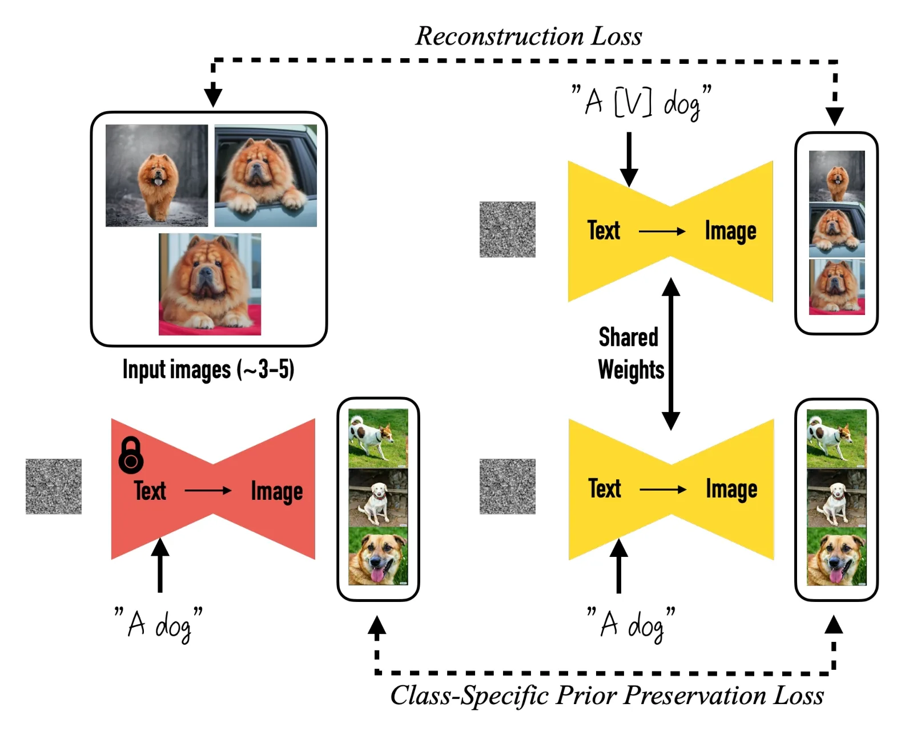
这里的 prior 指 原生成模型已有的类别知识，与 DALL·E 2 从文本生成 CLIP 图像向量的 prior 网络不是同一个组件。先验保持损失也不是直接计算参数距离、KL 散度或每一步匹配原模型的预测；它采用的是生成样本上的去噪监督，可以理解为一种类别样本回放。
原模型用于生成类别样本，随后这些样本作为固定数据参与训练，不需要让梯度穿过原模型的图像生成过程。它能帮助保留原能力，但有限样本并不构成完整分布保持的数学保证。
原论文怎样验证
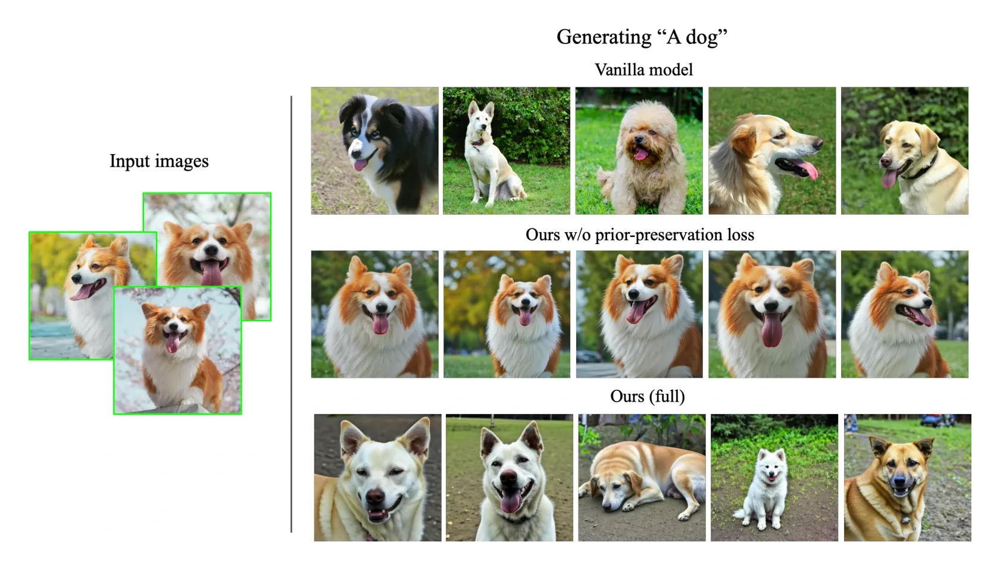
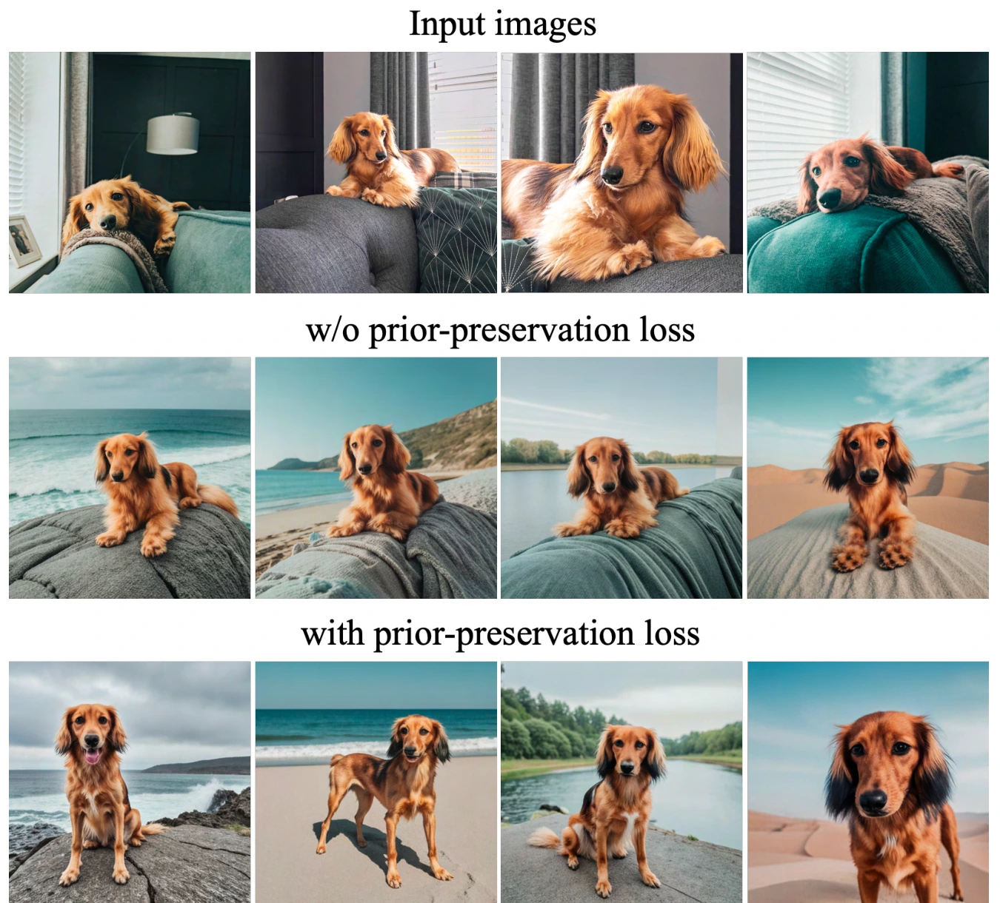
论文还用主体相似度、文本符合度和多样性评估这些取舍。主体相似度包括 DINO、CLIP 图像表征的比较；文本符合度采用 CLIP 图文相似度。这些是评估信号，不是上述主体训练损失中额外加入的 DINO/CLIP 损失。
先验保持能减轻漂移和过拟合，但也有权衡：原文消融中，多样性与类别保持改善时，主体相似度略有下降。不能把它写成一项没有代价、保证所有指标同时上升的正则。
和 IP-Adapter、LoRA 怎样区别
| 方法 | 核心操作 | 新主体怎样使用 |
|---|---|---|
| IP-Adapter | 通用图像条件接口读取参考特征 | 输入参考图，一般无需为它重训 |
| DreamBooth | 主体照片与标识监督生成模型适配 | 先针对主体训练，再用标识提示 |
| LoRA | 将权重增量限制为低秩形式 | 是否需要主体数据取决于训练任务 |
DreamBooth 原始方法更新生成模型以适配主体；LoRA 则可以用来参数化这项更新。二者不是互斥的两种主体生成算法，也不能把“用了 LoRA”直接等同于“用了 DreamBooth 的先验保持损失”。下一章会讲清低秩更新怎样改变参数量和存储，而不替代任务定义。
小结与局限
DreamBooth 的核心是：借助类别先验，将一个主体标识与少量照片中的特征绑定，并用类别样本回放减轻语言漂移。 推理时靠适配后的模型与文本条件生成，训练照片不必成为采样起点。
它仍可能把背景和主体一起记住，遗漏未见视角，或在复杂场景中改变主体颜色、形状等特征。少量二维照片也没有唯一确定真实三维结构，因此“换视角”是利用先验生成合理结果，不等于恢复了可验证的真实三维模型。
先验保持减少了部分风险，但不保证身份精确一致，也没有解决每个主体训练的计算与权重存储成本。接下来的 LoRA 处理后一个问题：能否把需要保存和训练的更新压缩到一小部分参数中？
每个主体都保存一套模型吗
DreamBooth 解释了怎样适配一个主体，但如果每个主体都更新并保存完整生成模型，训练状态与模型副本的成本会很高。主体不同、画风不同，是否一定需要保存同样庞大的一套新权重？
LoRA（Low-Rank Adaptation，低秩适配）改变的是 权重更新的表示方式：保留预训练权重，只训练较小的低秩增量。它不直接规定输入条件，也不自行定义主体保持、画风学习或条件控制的损失。#Hu-et-al-2022-LoRA（§4）
原论文研究的是语言模型适配。下面的矩阵推导可用于生成网络中的相应线性层，但原文的语言任务实验结果不能直接当作扩散模型的画质证据。
为什么可以只学习增量
考虑一个线性层，输入 $h\in\mathbb R^{d_{\mathrm{in}}}$，预训练权重为：
全量微调会得到一个新的矩阵 $W$。无论怎样更新，都可以写成：
LoRA 的假设是：适配任务需要的变化，可能不必占满矩阵的所有方向。因此将更新限制为：
于是前向计算变成：
$A$ 先把输入映射到 $r$ 维，$B$ 再把这部分信息映回输出维数，作为原层输出的修正。原权重 $W_0$ 冻结，训练只更新 $A,B$。$\alpha/r$ 是原论文采用的缩放约定，其他变体需另行注明。
由于矩阵乘积的秩满足：
更新的独立方向被限制在较小范围内。但 低秩的是增量，不是原矩阵，也不是完整生成模型。$W_0+sBA$ 仍可以满秩。这与前文“自然图像接近低维流形”的论点属于不同层次，不能直接互相当作证明。
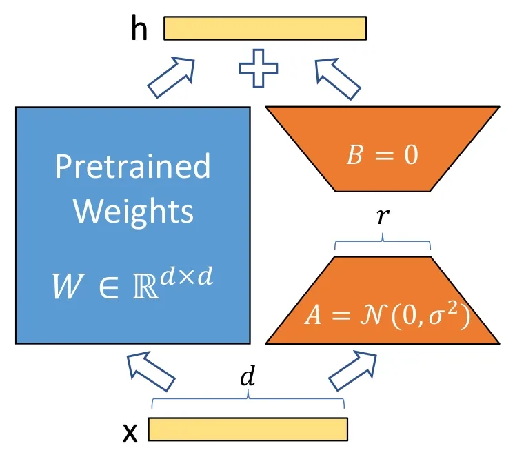
参数究竟少了多少
一个无偏置线性层，全量更新的参数量是：
LoRA 的可训练参数量是两个矩阵之和：
例如 $d_{\mathrm{in}}=d_{\mathrm{out}}=1024$、$r=8$，则：
该层可训练权重减少到原来的 $1/64$，约 1.56%。这是单层示例，不是某套扩散系统的总显存比例。
LoRA 可以减少梯度、优化器状态和适配权重存储，但训练仍要加载基座，并保留必要的中间激活、执行前向和反向计算。不能据此说“训练显存也一定降低 64 倍”，更不能说推理时只加载 LoRA 文件就能生成图像。
秩越大，通常允许更丰富的更新，但参数量也随之增加。更大不保证更好：数据有限时可能更容易过拟合；更小也不保证足够表达复杂任务。合适的秩与所适配层、任务和训练数据有关。
为什么一边随机、一边置零
原论文对 $A$ 使用随机高斯初始化，对 $B$ 置零。因此训练刚开始时：
新增旁路不会立即改变基座输出。这与前面零卷积、零门的稳定初始化直觉相通，但具体梯度结构不同。
令 $\delta=\partial\mathcal L/\partial y$，对一个样本有：
初始 $B=0$ 时，$B$ 的梯度仍可能非零，先发生更新；$A$ 在这条路径上的梯度暂为零，之后随 $B$ 非零开始学习。如果把 $A$ 和 $B$ 同时置零，两者梯度都会被挡住。这也解释了为什么“更新初始为零”不等于“两个因子都初始化为零”。
上述是基础 LoRA 的说明，后续初始化方案可能不同，不能不加区分地套用。#Hu-et-al-2022-LoRA（§4.1）
怎样用于扩散训练
生成任务先决定需要什么数据与损失，再决定哪些层采用 LoRA。以噪声预测为例：
其中 $\ell$ 指选定的层，原始基座参数 $\theta_0$ 冻结。可以适配 attention 的某些投影，也可以按具体实现覆盖其他线性或卷积层；是否训练文本编码器、哪些矩阵、偏置和归一化参数，需要明确配置。原论文对语言模型 Q/V 投影的选择，不是所有扩散模型必须遵守的规则。
如果训练任务是 DreamBooth，就可以将上一章的主体损失与先验保持损失保留，只把允许更新的参数限制到 LoRA：
因此，“DreamBooth + LoRA”是任务与参数化的组合。是否使用先验保持、训练哪些模块、标识怎样选择，并不由 LoRA 名称自动决定。
flowchart TD D["主体照片、标识与可选类别样本"] --> L["主体损失与先验保持损失"] L --> F["全量更新选定模型参数"] L --> R["冻结基座，更新选定层 A、B"] F --> O["主体适配后的生成模型"] R --> O
合并权重与调节强度
推理时可以保留低秩旁路，也可以预先合并：
在对应的线性层上，合并后直接执行一次原形状的矩阵乘法，不再需要额外的 A/B 旁路。这是原论文“合并后不增加网络推理延迟”的依据，不表示整个扩散采样天然变快；未合并、量化或其他特殊部署还要看实际实现。#Hu-et-al-2022-LoRA（§4.1）
常见推理配置另外引入适配强度 $\lambda$：
$\lambda=0$ 关闭这一增量，$\lambda=1$ 使用保存的标准强度。它与训练缩放 $s=\alpha/r$ 要区分，也不是 CFG scale。
模型会经过多层非线性和多步采样，所以权重按 $\lambda$ 线性变化，不意味着输出图像按同一比例线性变化。负权重或过大的权重也没有“精确删除一种概念”或“更准确”的普适保证。合并时还需确认文件是否已包含缩放，避免重复乘系数。
多个 LoRA 怎样组合
如果多个 LoRA 针对同一基座、同一个兼容层训练，正确的增量相加形式是：
不能先把所有 A 相加、再把所有 B 相加后相乘。以两个为例：
最后两项是原增量中没有的交叉项；若秩不同，直接相加因子甚至不满足形状要求。
增量的代数相加也不保证功能独立：主体与画风适配可能影响相同的层和方向，导致主体漂移、风格冲突或过度拟合的特征被放大。两份文件都标着 LoRA，不足以证明它们跨基座、跨版本兼容。
小结与边界
LoRA 回答的是“怎样表示和训练模型更新”，而不是“该使用哪种条件”。它把选定权重的更新限制为低秩因子，减少训练状态和适配文件体积，并允许合并回原形状权重。
它没有消除基座计算、采样步数、训练数据质量与主体过拟合问题，也不保证低秩足以覆盖所有任务。更重要的是，要分清三层决定：数据与损失规定学什么，LoRA 规定怎么改参数，条件接口和采样器规定生成时怎样使用模型。
下一章转向图像编辑，围绕“保留哪些信息、允许修改哪些内容”，说明掩码、attention 与指令条件怎样影响编辑；完整编辑专题另属独立选题。
保留什么，改变什么
前面的条件方法主要回答“生成什么”。图像编辑还多一个要求：给定已有图像，修改其中一部分内容，同时保留其余信息。例如给狗戴上帽子时，希望狗的身份、背景和构图不要一起重画。
这个问题至少包含三件事：原图信息从哪里进入生成过程？修改条件怎样影响预测？哪些信息由算法显式保留，哪些只依靠模型学到的相似性？本章按接口比较四种方法；更详细的反演、编辑评测与模型演进将在独立图像编辑专题展开。
掩码：在状态里保留原图
Blended Latent Diffusion 接收原图、目标描述和编辑掩码，在每一步的 latent 中混合生成区域与原图区域。#Avrahami-et-al-2023-BLD（§4）
令 $z_0^{\mathrm{src}}=E(x^{\mathrm{src}})$，$m$ 为对齐 latent 分辨率的掩码，约定 $m=1$ 表示允许编辑。当前从 $t$ 去噪到较低噪声时刻 $s$，先由文本条件得到候选状态 $\tilde z_s$。再把原图 latent 加噪到 同一个时刻：
然后混合：
$\odot$ 表示逐元素乘法。编辑区接受生成结果，保护区由相应噪声级的原图状态覆盖，再继续下一步。$\epsilon_s$ 表示该步原图加噪所用噪声；此式只描述所需噪声层级，具体跨步噪声组织遵循采样实现。
不能把干净的 $z_0^{\mathrm{src}}$ 直接贴进尚带噪的 $z_s$。 否则两部分的噪声层级不一致，偏离模型当前处理的状态分布。这个操作也不是等到最终图片才做一次剪贴：生成与混合交替进行，模型有机会协调编辑区与周围内容。
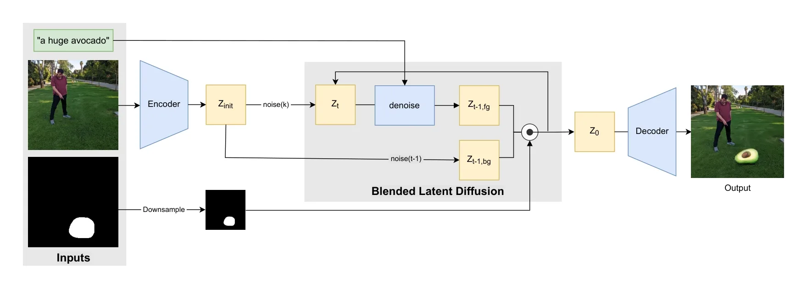
但“latent 保护区被覆盖”不等于“输出像素一模一样”。VAE 重建和解码器的空间耦合仍可能改变细节。原论文还提出可选的逐图解码器优化来改善背景重建，以及逐渐收缩掩码来处理细长编辑区域；不能将整篇工作简化为最终像素拼接，也不能把可选优化阶段称为完全没有优化。
Prompt-to-Prompt：保留词与位置的联系
如果编辑要求是把“一只猫坐在椅子上”改成“一只狗坐在椅子上”，我们希望替换主体，却保留大体位置与构图。Prompt-to-Prompt 控制的关键对象是 图像位置到文本 token 的 cross-attention map。#Hertz-et-al-2023-P2P（§3）
设源生成过程的 attention 权重为 $A_t^{\mathrm{src}}$，目标过程为 $A_t^{\mathrm{tgt}}$。每一行对应一个图像特征位置，每一列对应一个文本 token。编辑操作先构造：
再以目标文本的值向量生成目标分支特征：
简单词替换时，可以在选定步骤把源图的空间注意力关系注入目标过程，让新词在原有区域发挥作用；词序列不同时需要建立 token 对应，而不是直接按字符串位置复制。文本细化则保留已有词的映射，让新增词形成自己的关系；重加权则改变选定词的影响。
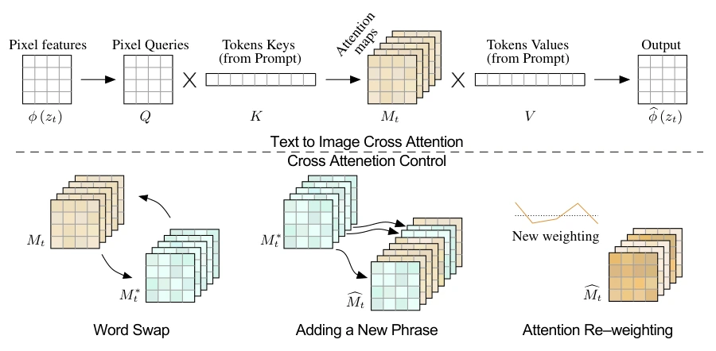
这些控制不应在所有时刻、所有对象上无条件硬复制。例如从汽车换成自行车，需要允许形状变化；注入的步骤与词映射决定保留和修改之间的权衡。注意力也不是精确的像素分割，修改可能扩散到其他区域。
原方法先以相同初始噪声等配置关联源、目标生成过程；对真实照片，则还需要反演或其他重建步骤，找到可供编辑的源轨迹。真实图像重建误差不能靠复制 attention 自动消失。它与上一节的逐步掩码覆盖，是两种不同的保留机制。
MasaCtrl：从源图特征读取外观
保持 cross-attention 的空间关系，适合部分语义替换，却可能限制较大的姿态或非刚性变化。MasaCtrl 希望目标结构可以变化，同时从源图保留相关内容与纹理，因而操作的是 图像 self-attention。#Cao-et-al-2023-MasaCtrl（§4）
普通目标 self-attention 用目标特征形成 Q、K、V。MasaCtrl 在选定层与时间，保留目标查询，却读取源生成或重建过程中的 K、V：
目标位置在问“这里需要什么内容”，源图特征则提供可读取的外观信息。这里虽然也用了跨来源的 attention，但不是图像查询文本：两边都是图像特征，分别来自关联的两个生成过程。
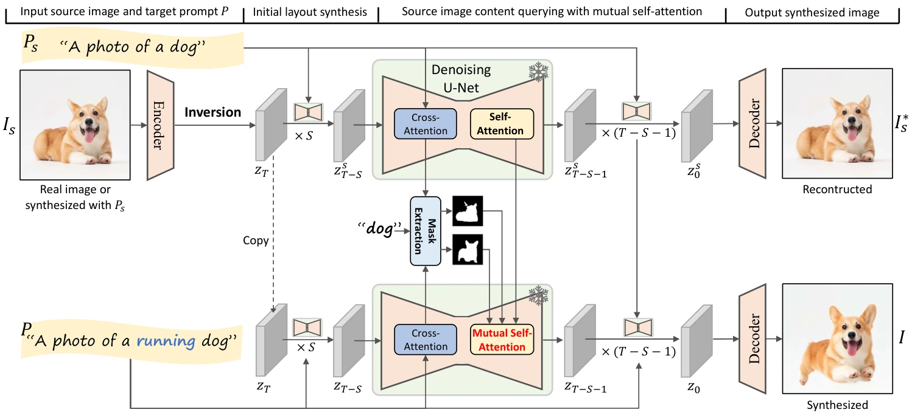
如果过早、过广地替换，模型可能只能复制原图，难以响应目标描述。原论文据此选择启用层和时刻，并通过前景/背景掩码限制错误匹配。它可以免主体微调，但真实图片仍涉及源图反演与重建；相似纹理引起的前景/背景混淆、未见区域和身份漂移也没有因此消失。
InstructPix2Pix：把修改动作学成条件
“一个穿红衣服的人”描述目标是什么，“把他的衣服改成红色”则要求比较输入与输出，并执行某个操作。InstructPix2Pix 直接学习后一类任务，输入是原图与编辑指令。#Brooks-et-al-2023-InstructPix2Pix（§3）
训练数据需要三元组 $(x^{\mathrm{in}},u,x^{\mathrm{out}})$，其中 $u$ 是修改指令。原论文先用语言模型生成原描述、指令与新描述的关系，再利用 Stable Diffusion 与 Prompt-to-Prompt 生成对应图像对并过滤。这说明这些工作也存在具体的数据构建联系，不完全是互不相关的方法。
模型对 目标图像 的 latent 加噪，把 输入图像 的干净 VAE latent 作为条件沿通道拼入预测器；指令通过文本条件接口输入：
训练的是通用指令编辑模型，推理时通常不需要为每一张新图再优化参数或做 DDIM inversion。这不表示一次网络前向就直接输出编辑成品：模型仍通过多步扩散采样生成，只是免去了逐样本反演或微调。
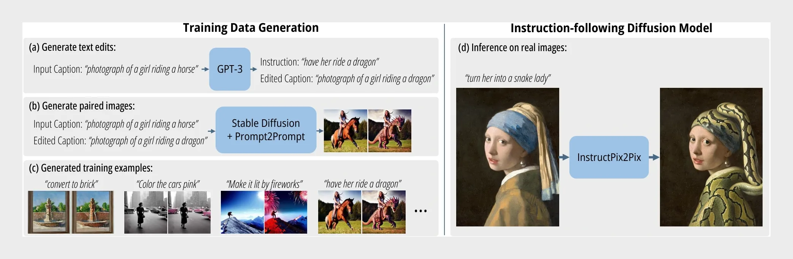
它还分别调节图像条件与指令条件的引导。简记当前时刻三份噪声预测为：
其中 $I$ 代指输入图像条件，则组合为：
第一项差异强调输入图像，第二项差异是在已有图像条件上强调指令。取 $s_I=s_T=1$ 时回到完整条件预测；提高两个强度不是同一种操作。它继承了 CFG 的差异外推思想，但不提供严格区域保护保证。
这里讲的是 InstructPix2Pix，不是经典的条件 GAN pix2pix。两者的训练架构与生成机制不同，不能简称后混用结论。
四种保留机制
| 方法 | 主要保留接口 | 主要限制 |
|---|---|---|
| Blended Latent Diffusion | 每步用匹配噪声级的原图 latent 覆盖保护区 | 需要掩码，latent 保留不等于像素精确重建 |
| Prompt-to-Prompt | 源文本的 cross-attention 空间关系 | 依赖词对应、注入日程与源轨迹 |
| MasaCtrl | 源图 self-attention 的 K/V 内容 | 源/目标匹配与启用时机可能失败 |
| InstructPix2Pix | 训练得到的输入图像和指令条件 | 受合成数据、条件权衡与泛化能力限制 |
flowchart TD I["源图或源生成轨迹"] --> B["BLD：每步混合保护区状态"] I --> P["Prompt-to-Prompt：共享图文 attention 关系"] I --> M["MasaCtrl：读取源图 K、V"] I --> X["InstructPix2Pix：输入图编码作为条件"] B --> O["结合修改条件生成编辑结果"] P --> O M --> O X --> O
因此，编辑不能只用一个“相似度强度”概括：保护状态、共享注意力和训练条件模型，约束的是不同位置的信息。它们也可能组合，但要核对生成轨迹、层位和模型版本。下一章将把本篇的条件输入、引导、参数适配与编辑机制放回同一张地图，总结怎样组合，以及还有哪些问题未解决。
回到开头的问题
本篇从“怎样让模型生成我想要的图”出发。现在可以给出更具体的回答：条件不是一个统一的控制旋钮，而是一组作用于不同位置的机制。编码器决定条件以什么形式出现，注入接口决定模型怎样读取，guidance 调整预测的使用方式，参数适配则改变模型此前学到的能力。
因此，这些方法不能排成一条“新方法替换旧方法”的直线。它们有的构成完整系统的组件，有的规定训练任务，有的操作采样过程；很多时候需要组合，才能满足一个具体要求。
一张统一的地图
| 方法或组件 | 主要改变哪里 | 学习或使用什么信息 | 训练与推理的区别 |
|---|---|---|---|
| CLIP | 条件表征 | 图文对应关系 | 先训练表征；生成时按系统需要读取文本或图像特征 |
| Cross-attention | 预测器中间特征 | 图像位置对条件 token 的查询 | 接口需训练；每步按当前图像特征读取条件 |
| CFG | 供采样器使用的最终预测 | 条件相对基线的差异 | 训练空条件能力；推理组合不同条件预测 |
| GLIGEN | 门控 attention | 对象语义及其位置 | 训练新增模块；推理输入框等 grounding 条件 |
| ControlNet | 多尺度控制残差 | 姿态、边缘、深度等空间结构 | 训练控制分支；每步结合当前状态计算残差 |
| T2I-Adapter | 编码器的条件特征 | 对应类型的空间条件 | 训练适配器；固定控制图特征可预先计算 |
| IP-Adapter | 独立图像 attention 分支 | 参考图的内容与风格 | 训练通用接口；新参考图通常只需编码 |
| DreamBooth | 主体适配后的模型参数 | 特定主体与标识的联系 | 先针对主体训练；推理用标识调用 |
| LoRA | 权重增量的参数化 | 由具体训练任务决定 | 训练低秩因子；推理可保留旁路或合并 |
| 图像编辑机制 | 源状态、attention 或图像条件 | 应保留的原图信息与修改要求 | 有些控制现成模型，有些先训练通用编辑器 |
Stable Diffusion 是将表示、生成主干、条件与采样组合起来的基座实例，不能与 CFG、LoRA 当成同一层级的方法比较。完整架构在图像基模篇展开，本篇保留的是理解条件方法所需的接口。#Ho-Salimans-2022-CFG #Rombach-et-al-2022-LDM #Li-et-al-2023-GLIGEN #Zhang-et-al-2023-ControlNet #Ye-et-al-2023-IP-Adapter #Ruiz-et-al-2023-DreamBooth #Hu-et-al-2022-LoRA #Mou-et-al-2024-T2I-Adapter #Avrahami-et-al-2023-BLD #Hertz-et-al-2023-P2P #Cao-et-al-2023-MasaCtrl #Brooks-et-al-2023-InstructPix2Pix
多个条件不是多个独立答案
假设我们希望“让照片里的这只狗，按骨架摆出姿势，出现在雪地里，并保持水彩风格”。这个要求至少涉及：主体外观、空间结构、场景语义和风格。
一种可能的组合是：参考图通过 IP-Adapter 提供视觉线索，骨架通过 ControlNet 提供姿态，文字提供雪地场景，兼容的风格 LoRA 改变模型的生成倾向，再用 CFG 调节条件预测的差异。如果主体需要更稳定的个性化，也可以先采用 DreamBooth 任务训练主体适配，再考虑如何与其他条件配合。
这些是功能分工示例，不是任意下载几份权重就可运行的配置。要核对基座、层位、通道、编码器和训练约定，并逐步检查每一项是否起作用。参考图如果同时带有强烈背景或风格，可能不只传递主体；主体 LoRA 也可能顺带学进训练照片的背景。
从数学上，理想的共同条件模型需要描述联合条件分布：
分别有两个条件模型，不代表简单相加就自动得到这个联合 score。由贝叶斯公式：
再把联合条件概率分解：
第二项仍依赖第一个条件。只有在额外条件成立时，例如给定当前状态后两项条件独立，才可以进一步换成两个分别条件化的项。现实中“主体”“风格”“姿态”常互相关联，因此不能把这个独立性当作默认事实。
同样，ControlNet 残差相加、图文 attention 输出相加、LoRA 权重增量相加，是三个不同层次的运算。它们可以作为构建模型的方式，但都不单独保证精确满足全部条件；网络后续非线性还会进一步耦合这些影响。
一次生成的执行顺序
把训练准备与每次生成分开，会更容易理解组合系统。
生成之前，先选择兼容基座及条件模块。如果需要主体适配，先完成相关训练；如果加载 LoRA，确认层位和缩放。随后编码文本和参考图，准备与图像坐标对齐的控制图，并初始化采样状态。这里以从高斯噪声生成作为示例；img2img 和反演编辑使用的初始化不同。
每个采样时刻，控制分支结合当前状态产生结构信息，图文 attention 在主干中读取条件，网络输出噪声、干净估计或速度；需要 CFG 时，再计算并组合相应基线预测，最后由采样器更新状态。
flowchart TD
P["兼容基座与已训练适配权重"] --> M["当前状态与时间下的条件预测器"]
T["文本编码"] --> M
I["参考图编码与图像 attention"] --> M
C["控制图与空间控制分支"] --> M
X["当前带噪状态与时间"] --> M
M --> G["按需组合条件与基线预测"]
G --> S["采样器更新状态"]
S --> B{"是否到终点"}
B -->|否| X
B -->|是| D["图像解码或输出"]图中省略了 CFG 所需的额外网络调用。多条件情况下，基线也有不同定义：只去掉文本、去掉参考图，或同时去掉全部条件，形成的差向量不同。选择哪一个，需要与训练时的条件丢弃方式及具体实现一致。
这里再次区分三个经常混淆的参数：CFG scale 缩放预测差异，ControlNet/IP-Adapter 强度缩放内部条件贡献，LoRA 强度缩放权重增量。它们没有通用的数值换算，也不保证增大某个值会单调提高符合度。
仍然没有解决什么
第一，条件接口不等于硬约束。 指定骨架不保证每个关节精确落点，指定框不保证每个对象都出现，提供参考图也不保证身份或文字细节完全一致。一个结果看起来相似，不足以证明满足了用户关心的每项条件。
第二，保持与改变相互牵制。 强参考约束可能妨碍新姿态，强主体适配可能绑定旧背景，强编辑指令可能破坏原图。控制目标不是把全部强度拉满，而是在明确的任务要求下选择信息来源和保留机制。
第三，表征与模型知识有上限。 全局图像向量可能丢失细节，VAE 重建可能损伤小字或纹理，基座也可能缺乏某些对象关系的知识。提高 guidance 不能普遍补回未被编码或未被学习的信息。
第四，训练与计算成本仍然存在。 通用接口需要训练数据，主体方法需要个体数据，CFG 往往增加预测计算，额外分支也需要算力。LoRA 降低适配成本，但不消除主干计算和采样步骤。
第五，评价不能只看一张成功样例。 应分别考察视觉质量、条件符合度、主体相似度、非编辑区域保持与输出多样性；这些目标可能相互冲突。CLIP、DINO、检测器或像素指标各自只观察其中一部分，不能凭一个总分宣布某方法全面更好。
上述边界也决定了后续阅读分工：图像基模篇解释表示与主干如何限制能力；独立图像编辑专题进一步研究原图保持、反演和编辑；本系列下一篇先梳理完整图像基模，再进入视频任务，讨论时间维度新增的要求。
从一张图走向一段视频
视频条件生成不是简单把同一图像条件模型逐帧运行。每帧都像同一只狗，不代表相邻帧之间外观稳定；每帧都符合姿态，也不代表动作连续、遮挡合理、相机运动一致。
用 $X=(x^{(1)},\ldots,x^{(F)})$ 表示 $F$ 帧视频，需要描述的是联合分布：
这是概率的链式分解，用来说明帧间依赖；不表示视频模型必须按帧自回归实现。相反，独立逐帧生成采用的近似是：
它没有显式建模给定条件后剩余的帧间联系。即便每帧使用相同提示词或参考图，也不能自然保证这些联系被正确表达。
因此，文本、参考图、姿态和 guidance 可以作为视频模型的接口基础，但模型仍需处理时空表示、运动依赖与条件在时间上的一致性。下一篇从任务与时空建模出发，说明文生视频、图生视频、续写和视频编辑各自需要哪些条件。
本篇最后的结论是：条件生成是一套从信息表示、模型读取、预测调节到参数适配的系统设计。 只有明确每种机制控制的位置、需要的训练和保留不了的信息，才能判断一种组合是否真正解决了自己的问题。
参考来源
- Ho 与 Salimans. Classifier-Free Diffusion Guidance. 2022。
- Rombach et al.. High-Resolution Image Synthesis with Latent Diffusion Models. CVPR 2022。
- Li et al.. GLIGEN: Open-Set Grounded Text-to-Image Generation. CVPR 2023。
- Zhang, Rao 与 Agrawala. Adding Conditional Control to Text-to-Image Diffusion Models. ICCV 2023。
- Ye et al.. IP-Adapter: Text Compatible Image Prompt Adapter for Text-to-Image Diffusion Models. 2023。
- Ruiz et al.. DreamBooth: Fine Tuning Text-to-Image Diffusion Models for Subject-Driven Generation. CVPR 2023。
- Hu et al.. LoRA: Low-Rank Adaptation of Large Language Models. ICLR 2022。
- Radford et al.. Learning Transferable Visual Models From Natural Language Supervision. ICML 2021。
- CompVis. Stable Diffusion v1-4 模型卡与官方实现. 版本说明；序列特征接口见官方 FrozenCLIPEmbedder。
- Ramesh et al.. Hierarchical Text-Conditional Image Generation with CLIP Latents. 2022。
- Mou et al.. T2I-Adapter: Learning Adapters to Dig out More Controllable Ability for Text-to-Image Diffusion Models. arXiv 2023；AAAI 2024。
- Avrahami, Fried 与 Lischinski. Blended Latent Diffusion. arXiv 2022；ACM TOG 2023。
- Hertz et al.. Prompt-to-Prompt Image Editing with Cross Attention Control. arXiv 2022；ICLR 2023。
- Cao et al.. MasaCtrl: Tuning-Free Mutual Self-Attention Control for Consistent Image Synthesis and Editing. ICCV 2023。
- Brooks, Holynski 与 Efros. InstructPix2Pix: Learning to Follow Image Editing Instructions. CVPR 2023。